Moduły stron sklepu: strona główna, lista, „Jak kupić”, karta
Jedna lista zamiast trzech wersji. Kolejność, praca modułu i dowody pochodzą z układu z 30.10 (sklep „tylko banki”), który ta strona zastępuje. Przy każdym module możesz otworzyć widoki: jak moduł wygląda dziś w kopii sklepu, jak w projekcie zmian z 28.10 i jak robią to najlepsze sklepy z benchmarku (zagranica najpierw). Na końcu jest karta falownika i sterownika energii z 29.10 oraz decyzje, na które czekają moduły.
P0bez tego strona nie robi swojej pracy P1przed startem P2po starcie albo gdy będą dane
Strona główna
Co się zmienia w kolejności: Kolejność wg ZASADY § 3 („skrót rozdzielni: hero z tezą, listing, narzędzia, jak zacząć, wideo, artykuły, pytania”) z jedną zmianą: „Od czego zaczynasz?” stoi przed narzędziami, bo bez przełącznika linii to ona segmentuje ruch, a jej pierwsze wyjście i tak prowadzi do narzędzia. Kod 30.10 ma już wersję tylko-banki (POMPY_W_SKLEPIE=false); dzisiejsza kolejność: hero → pasek → listing → kroki → Od czego zaczynasz → paragon → dotacje → Zanim kupisz → FAQ. Propozycja: przenieść bramkę nad kroki, dodać listę narzędzi, kroki zejść niżej.
Nagłówek: logo, szukaj, telefon, koszyk, menu
Mówi, że to sklep z bankami energii, daje wyszukiwarkę, jeden dotyk do doradcy i potwierdzenie, że paragon jest w koszyku. Menu tylko-banki: Banki energii · Jak kupić · Dobór banku · Montaż · Dotacje.
Dlaczego: Logo i menu na telefonie to twarda norma rynku. Przy bilecie 25–70 tys. zł kupujący szuka sygnału, że za sklepem stoi firma, i drogi do człowieka bez szukania numeru.
Stan: jest, do zmiany: ikona telefonu do doradcy (czeka na numer, HP-12), licznik na koszyku, ikona menu zamiast słowa; znak w logo czeka na Tomka
Pokaż moduł: dziś, rynek i projekt
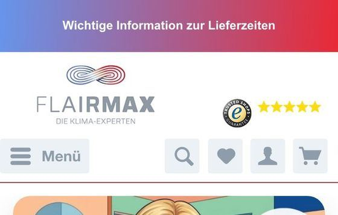
Logo dostaje znak graficzny (prośba Tomka o „ładne logo”), napis „Menu” zamienia się w ikonę, a nagłówek dostaje ikonę telefonu do doradcy i licznik na koszyku. Koszyk jest już ikoną, więc ta część nagłówka się nie zmienia. Pole wyszukiwania i układ zostają 1:1.
- 1Znak graficzny w logo
- 2Telefon do doradcy
- 3Licznik w koszyku
- 4Ikona menu
Dowody (4)
- header_logo 19/20, header_mobile_hamburger 17/20ai4cro-reports/docs/own_shop/grzejeko/konkurencja/BEST_PRACTICE_RYNKU_ENERGETYKA.html § Higiena rynku / Strona główna
- „Logo mają wszystkie sklepy (8 z 8 w PL, 11 z 11 razem)”; Quatt trzyma przycisk doradztwa „Plan advies” w nagłówkuai4cro-reports/docs/own_shop/grzejeko/projekt/zmiany/REKOMENDACJE_STRONA_GLOWNA.html § HP-01 Rynek
- dziś nagłówek 109 px, słowo „Menu”, koszyk bez licznika — „po dodaniu paragonu kupujący nie ma potwierdzenia”ai4cro-reports/docs/own_shop/grzejeko/projekt/zmiany/REKOMENDACJE_STRONA_GLOWNA.html § HP-01 UX
- wersja tylko-banki ma już w menu „Jak kupić” zamiast „Pompy ciepła”grzejeko-shop/apps/storefront/src/modules/layout/templates/nav/index.tsx
Hero: teza, cena od … z montażem, dwa wejścia
Na pierwszym ekranie odpowiada: co tu kupię (bank do mojej fotowoltaiki), ile to kosztuje razem z montażem i po zwrocie dotacji oraz co zrobić teraz: dobrać bank do falownika albo od razu przejść do banków.
Dlaczego: Dwa największe punkty wejścia banku to dotacja i dobór do instalacji; dziś hero ma przycisk doboru, ale nie ma żadnej kwoty. Cena z montażem przed kontaktem to rzadkość na rynku, więc jest wyróżnikiem, a nie higieną.
Stan: jest, do zmiany: brak linii ceny „od … z montażem, po zwrocie dotacji” (kwota z Medusy, po cenniku D7); drugi link „Banki energii” podnieść do równorzędnego wejścia
Pokaż moduł: dziś, rynek i projekt
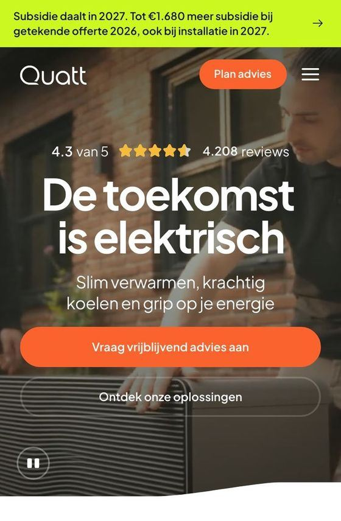
Nagłówek, akapit i zdjęcie zostają. Dochodzi jedna linia ceny „od … po dotacji, z montażem” i trzy wejścia pod głównym przyciskiem: policz dotację, zobacz cenę montażu, dobierz moc pompy. Dwa linki „Banki energii | Pompy ciepła” przejmuje przełącznik linii.
- 1Cena po dotacji z montażem w pierwszym ekranie
- 2Trzy wejścia: dotacja, montaż, dobór mocy
Dowody (6)
- hero_banner 15/20, hero_cta 12/20ai4cro-reports/docs/own_shop/grzejeko/konkurencja/BEST_PRACTICE_RYNKU_ENERGETYKA.html § Higiena / Strona główna
- dotacja 9 320 fraz/mies., 37 pytań; dobór do instalacji 6 860 fraz, 56 pytań; „z montażem” 590 frazai4cro-reports/docs/own_shop/grzejeko/projekt/zmiany/REKOMENDACJE_STRONA_GLOWNA.html § HP-03 Kupujący
- „Cena sprzętu jest dziś w kaflach kategorii dopiero na 1 015 px, a paragon na 2 700 px”ai4cro-reports/docs/own_shop/grzejeko/projekt/zmiany/REKOMENDACJE_STRONA_GLOWNA.html § HP-03 UX
- Boxt (UK): „Installed from £4,799” na stronie głównej; HVACDirect: dwa równorzędne wejścia „Shop Complete Systems” + „Find My Size”ai4cro-reports/docs/own_shop/grzejeko/konkurencja/BEST_PRACTICE_RYNKU_ENERGETYKA.html § Best practice / Strona główna
- cena z montażem w jednej liczbie bez kontaktu: 1 z 12 sklepów zagranicznych; „Dla frontu linii: przycisk do listingu + przycisk do narzędzia, oba na pierwszym ekranie”grzejeko-shop/own_shop/design/ZASADY_ARCHITEKTURY_INFORMACJI.html § Referencje z benchmarku
- „Po dotacji” mówi wprost, że to zwrot po czasie: „płacisz całość; dotacja wraca na konto po montażu…”grzejeko-shop/_kontekst/BUILD_PLAN_GRZEJEKO.md § D31
Pasek zaufania
Trzy–cztery krótkie obietnice z ikonami: montaż z własnej firmy z uprawnieniami, źródła liczb z datą, 14 dni na zwrot sprzętu, wniosek o dotację składamy za Ciebie.
Dlaczego: Odpowiada na dwie obawy wysokiego biletu: kto zamontuje i czy załapię się na dotację. Dowód rynkowy jest średni (to nie norma), ale pozycje bez liczb niczego nie udają.
Stan: jest, do zmiany: ikony zamiast kropek i czwarta pozycja o dotacji (w brzmieniu D31: „na podstawie Twojego pełnomocnictwa”)
Pokaż moduł: dziś, rynek i projekt
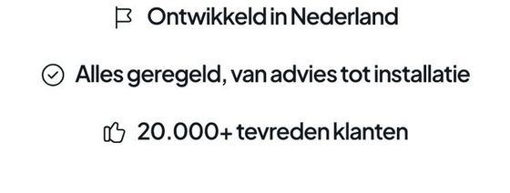
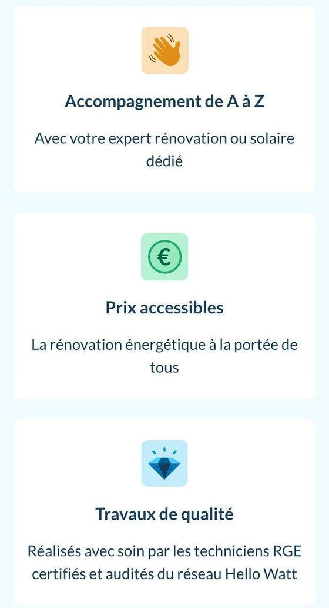
Trzy zdania zostają co do słowa; dochodzą ikony i czwarta pozycja „Dotacja policzona na paragonie, przed zakupem”. Liczb klientów i ocen nie dodajemy, bo ich nie mamy.
- 1Dotacja na paragonie jako czwarta obietnica
- 2Ikony przy obietnicach
Dowody (3)
- „Pasek zaufania ma 3 z 8 sklepów PL i 5 z 11 razem, więc nie spełnia normy”; Quatt: trzy pozycje z ikonamiai4cro-reports/docs/own_shop/grzejeko/projekt/zmiany/REKOMENDACJE_STRONA_GLOWNA.html § HP-04 Rynek
- obawy: „kto mi to zamontuje i czy gwarancja nie przepadnie” i „czy się łapię na dotację”ai4cro-reports/docs/own_shop/grzejeko/projekt/zmiany/REKOMENDACJE_STRONA_GLOWNA.html § HP-04 Kupujący
- pasek: „Cena montażu przed zakupem · Montaż własną ekipą z uprawnieniami · Wniosek o dotację składamy my · 14 dni na zwrot sprzętu”ai4cro-reports/docs/own_shop/grzejeko/projekt/styl_F2/banki.html
Banki energii z ceną montażu (kafle)
Pokazuje banki jako produkty do kupienia: pojemność (bateria), pasujące falowniki, cena sprzętu, z montażem i EMS, po zwrocie dotacji; link do karty i do całej listy.
Dlaczego: Kafle pod hero to najmocniejsza norma strony głównej i twarde wymaganie Tomka (każda strona ma listing i kupno). W wersji tylko-banki sekcja pokazuje same banki, bez kafla pompy.
Stan: jest (B11.1, sortowane po pojemności); do zmiany: liczba na kaflu wg PLP-02, plakietka rynkowa przy ~10 kWh tylko z podpisem źródła; przy 34 wariantach pokazać wybór (np. po jednym na przedział), nie wszystkie
Pokaż moduł: dziś, rynek i projekt
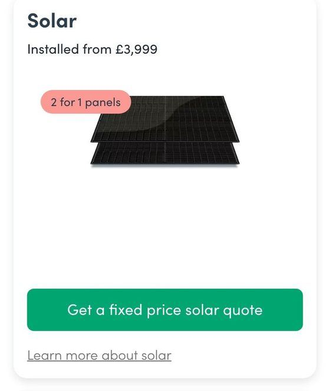
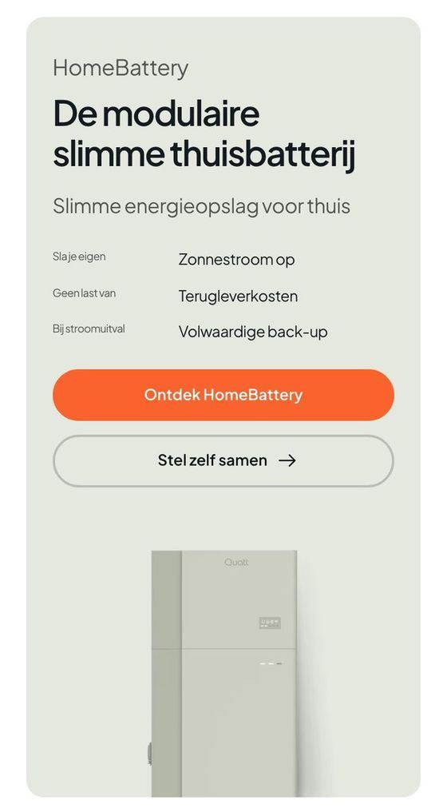
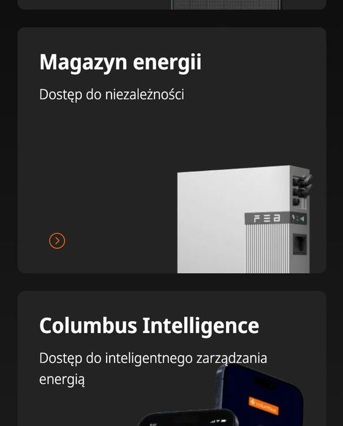
Pod hero i paskiem zaufania sekcja z czterema kaflami produktów: cena po dotacji z montażem jako główna liczba i plakietka „Najczęstsza pojemność w domach” tylko przy 10 kWh (z danych rynku). Kafle są wspólne z listą produktów. Kolejność według ceny, dopóki nie ma danych o zamówieniach.
- 1Plakietka rynkowa
- 2Cena po dotacji z montażem jako główna liczba
- 3Sekcja z kaflami produktów
- 4Do pierwszych zamówień kolejność według ceny
Dowody (6)
- „Kafle kategorii albo produktów pod hero — 7 z 8”ai4cro-reports/docs/own_shop/grzejeko/konkurencja/LISTA_POPRAWEK_H2H.html § Strona główna
- nav_category_tiles 15/20ai4cro-reports/docs/own_shop/grzejeko/konkurencja/BEST_PRACTICE_RYNKU_ENERGETYKA.html § Higiena / Strona główna
- „pojemność rozstrzyga 95,9% wyszukań”; dziś kupujący widzi koszt dopiero na liście albo na 2 700 pxai4cro-reports/docs/own_shop/grzejeko/projekt/zmiany/REKOMENDACJE_STRONA_GLOWNA.html § HP-05 Kupujący
- kafle produktów/bestsellery 3 z 8 PL; Solvolte karuzela z ceną i ratą; „Ceny z montażem na stronie głównej to rzadkość w PL”ai4cro-reports/docs/own_shop/grzejeko/projekt/zmiany/REKOMENDACJE_STRONA_GLOWNA.html § HP-05 Rynek
- „Każda strona sklepu ma listing produktów i kupno — moduł kafli produktów zawsze obecny i nigdy pusty”grzejeko-shop/_kontekst/BUILD_PLAN_GRZEJEKO.md § D22
- banki przykładowe (klasy 5/10/15/20 kWh) w drafcie; prawdziwe: 13 rodzin / 34 warianty, ceny realne 62–73% niżej od klasgrzejeko-shop/_kontekst/BUILD_PLAN_GRZEJEKO.md § D37
Od czego zaczynasz? (trzy sytuacje)
Kupujący sam wybiera swoją sytuację: mam fotowoltaikę i falownik → dobór; nie wiem, od czego zacząć → LP „Jak kupić bank energii”; wiem, czego chcę → lista banków. To główne wejście do LP.
Dlaczego: W wersji z pompami segmentację robił przełącznik linii; bez pomp tę pracę przejmuje bramka sytuacji, ta sama co na LP. Segmentacja na wejściu ma wzorzec na rynku (Columbus, 1KOMMA5°).
Stan: jest (30.10, data-testid home-start); do zmiany: etykiety i cele uzgodnić z bramką LP (dziś strona główna: „Mam fotowoltaikę i falownik” → /dobor-banku, LP: „Mam fotowoltaikę” → krok 1; „Dopiero planuję” na LP prowadzi do poradnika w stanie szkic)
Pokaż moduł: dziś i rynek
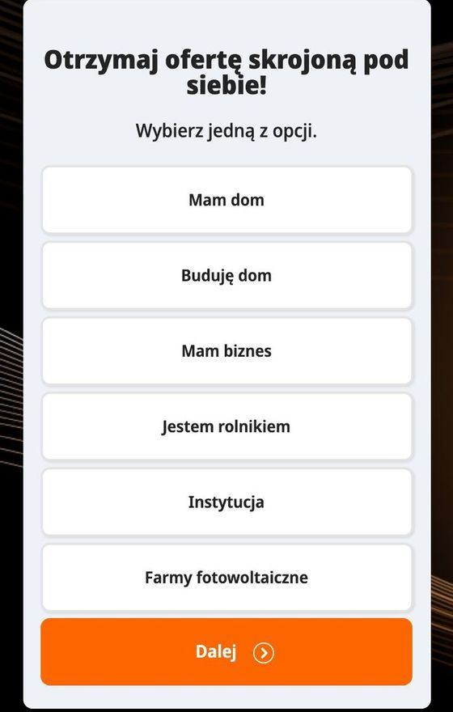
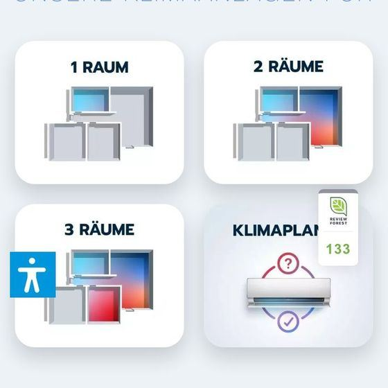
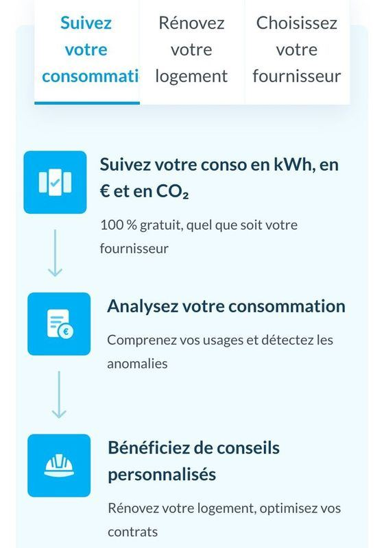
Dowody (4)
- „Segmentacja na wejściu. Columbus pyta „mam dom / buduję dom / mam firmę”. U nas pełni to przełącznik linii”ai4cro-reports/docs/own_shop/grzejeko/konkurencja/LISTA_POPRAWEK_H2H.html § Najlepsze praktyki
- 1KOMMA5°: pierwsze pytanie wbudowane zaraz pod hero, trzy kafle sytuacjiai4cro-reports/docs/own_shop/grzejeko/konkurencja/BEST_PRACTICE_RYNKU_ENERGETYKA.html § Best practice / Strona główna
- bramka sytuacji: „Mam fotowoltaikę” → krok 1 · „Dopiero planuję” → poradnik · „Wiem, czego chcę” → listing; „Strona główna linii = skrót tej rozdzielni”grzejeko-shop/own_shop/design/ZASADY_ARCHITEKTURY_INFORMACJI.html § 3
- pytanie banku: „Od czego zacząć, żeby sprawdzić, czy magazyn energii ma sens przy mojej instalacji PV?”ai4cro-reports/docs/own_shop/grzejeko/projekt/zmiany/REKOMENDACJE_STRONA_GLOWNA.html § HP-07 Kupujący
Narzędzia: policz, zanim kupisz
Lista narzędzi banku z pytaniem kupującego i jawnym stanem: Dobierz bank do falownika (działa), Sprawdź swój falownik, Policz dotację PME 2, Policz oszczędność (wkrótce).
Dlaczego: Pytania banku rozkładają się na trzy narzędzia (dotacja, dobór, oszczędność). Żaden sklep PL nie pokazuje listy narzędzi, a dobór banku do falownika nie ma na rynku odpowiednika — to wyróżnik grzejeko.
Stan: nowy (dziś jedno narzędzie jako przycisk w hero i w „Od czego zaczynasz”)
Pokaż moduł: rynek i projekt
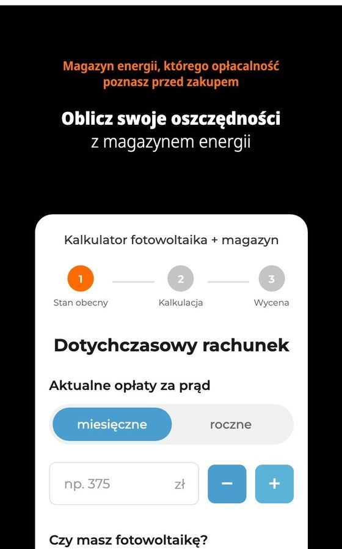
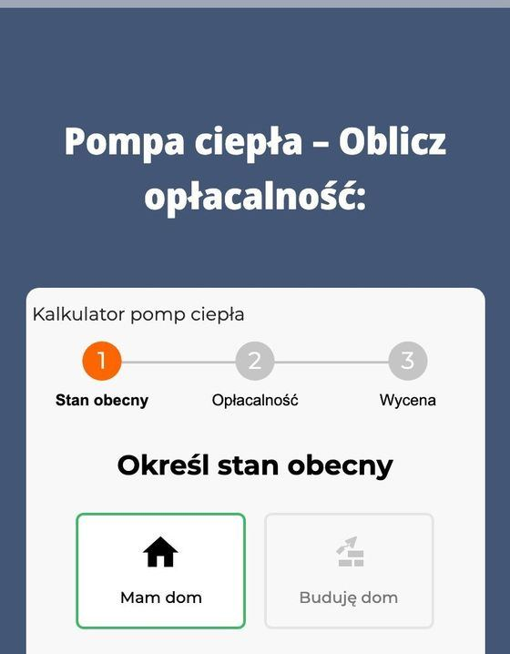
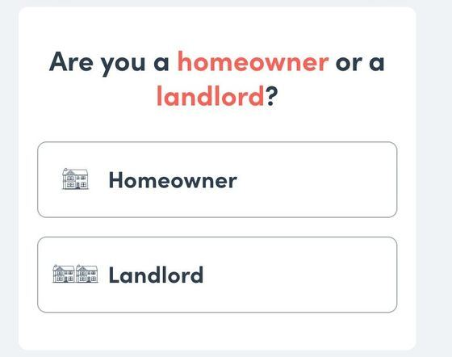
Siatka narzędzi: przy każdym pytanie kupującego i uczciwy status „działa” lub „wkrótce”. Dziś działa jedno (dobór banku do falownika), reszta powstaje: dotacja Mój Prąd, zgodność falownika, oszczędność, dobór mocy pompy, pompa kontra gaz. Lista zastępuje pojedynczy przycisk jako wejście do wszystkich narzędzi.
- 1Narzędzie, które działa dziś
- 2Narzędzia, które dopiero powstają, z uczciwym statusem
- 3Pełna lista narzędzi
Dowody (4)
- dotacja 9 320 fraz, dobór 6 860 (56 pytań), oszczędność przy net-billingu 4 480ai4cro-reports/docs/own_shop/grzejeko/projekt/zmiany/REKOMENDACJE_STRONA_GLOWNA.html § HP-06 Kupujący
- narzędzia mają KupPanPompe, GeoPower, Columbus, Flairmax; „Żaden sklep PL nie pokazuje listy narzędzi”ai4cro-reports/docs/own_shop/grzejeko/projekt/zmiany/REKOMENDACJE_STRONA_GLOWNA.html § HP-06 Rynek
- „Zgodność bank ↔ falownik: tylko Signature Solar… zostaje wyróżnikiem grzejeko”; § 5: narzędzie w planie tylko na liście narzędzi, z „wkrótce”grzejeko-shop/own_shop/design/ZASADY_ARCHITEKTURY_INFORMACJI.html § Referencje
- dobor-banku: „działa”; oszczednosc-banku, dotacja-moj-prad (PME 2), zgodnosc-falownika: „plan”grzejeko-shop/own_shop/grzejeko/MODEL_TRESCI.json § narzedzia
Ile powinien kosztować montaż (paragon)
Rozpisuje jeden prawdziwy zestaw na pozycje: sprzęt, montaż, EMS, do zapłaty teraz, zwrot dotacji PME 2, Twój koszt. Kupujący widzi, że montaż to pozycja z ceną, a nie „pakiet”.
Dlaczego: To element, którego nie ma żaden z 8 rywali PL na stronie głównej; rozbicie ceny zestawu mają najlepsi za granicą. Odpowiada na pytanie „ile zapłacę razem”.
Stan: jest (z prawdziwego banku od 10 kWh, D37; D31 wdrożone); kwoty montażu/EMS to przykład cennika do decyzji D7
Pokaż moduł: dziś i rynek
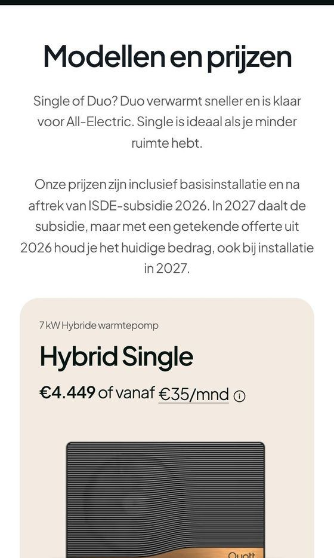
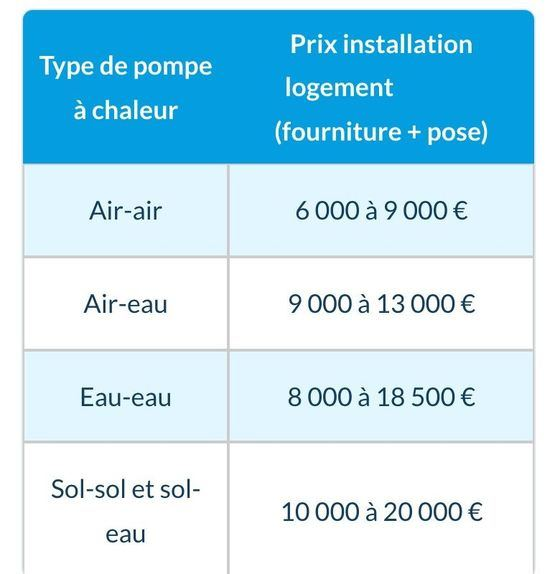

Dowody (4)
- F2 dokłada rzeczy, „których nie ma żaden z 8 rywali: przełącznik linii, paragon na stronie głównej…”ai4cro-reports/docs/own_shop/grzejeko/konkurencja/LISTA_POPRAWEK_H2H.html § Co z tego wynika
- „Cena z montażem przed kontaktem… Nikt w Polsce nie robi tego od wejścia… To jest nasz element nr 1”; Solvolte: montaż jako osobna karta — „najbliższe modelowi grzejeko”ai4cro-reports/docs/own_shop/grzejeko/konkurencja/BEST_PRACTICE_RYNKU_ENERGETYKA.html § Co z tego dla grzejeko
- rozbicie ceny zestawu na pozycje: 3 z 12 (Anker, Signature Solar, HVACDirect)grzejeko-shop/own_shop/design/ZASADY_ARCHITEKTURY_INFORMACJI.html § Referencje
- dotacja liczona jedną funkcją (≥ 10 kWh, koszt bez EMS); „Do zapłaty teraz (całość)” przed wierszem zwrotugrzejeko-shop/_kontekst/BUILD_PLAN_GRZEJEKO.md § D29/D31
Dotacja PME 2 bez tłumacza
Trzy bloki: ile (800 zł/kWh, do 16 000 / 8 000 zł), warunki (EMS, praca wyspowa, min. 10 kWh), jak i kiedy wraca (po montażu, do 120 dni + 20 dni roboczych) i że wniosek składamy za Ciebie.
Dlaczego: Dotacja to punkt wejścia nr 1 banku; kupujący szuka swojej kwoty i warunków. Rynek pokazuje kwoty i warunki, a my dodatkowo uczciwie mówimy, że to zwrot po czasie.
Stan: jest (wersja tylko-banki: trzy bloki PME 2); do zmiany: data aktualizacji i przycisk „Policz moją dotację” (narzędzie w planie → link do /dotacje do czasu startu narzędzia)
Pokaż moduł: dziś, rynek i projekt
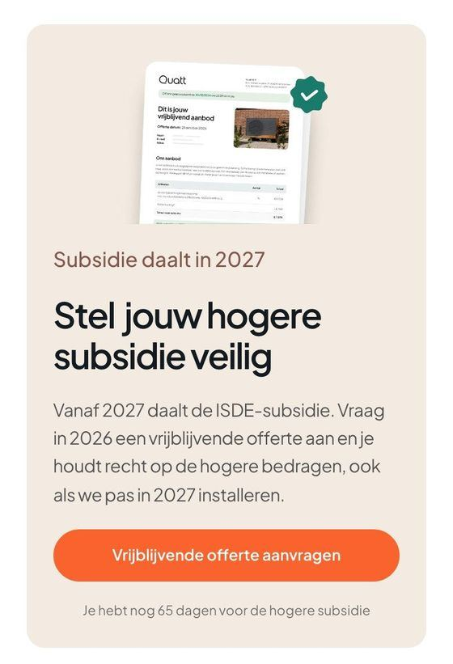
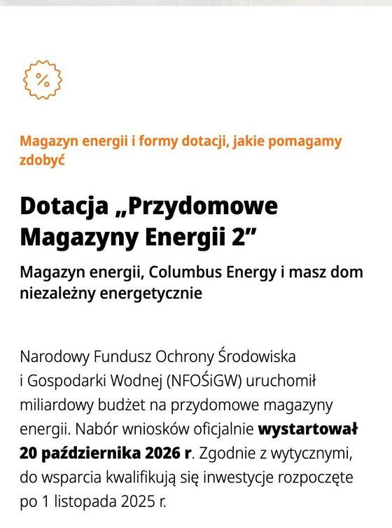
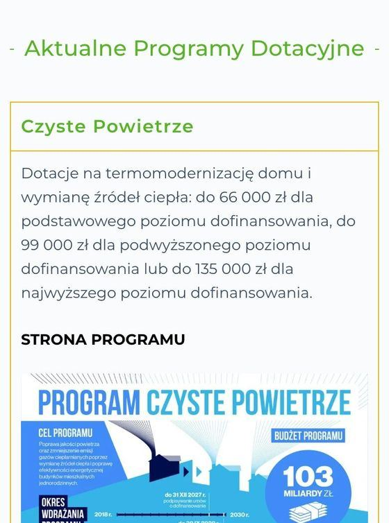
Sekcja zostaje co do słowa: trzy bloki z kwotami i warunkami. Dochodzi data aktualizacji i przycisk „Policz moją dotację” (narzędzie „wkrótce”), żeby kupujący z dotacji nie czytał kwot, tylko dostał swoją.
- 1Data aktualizacji dotacji
- 2Wejście w kalkulator dotacji
Dowody (3)
- „Dotacja to punkt wejścia nr 1 banku (9 320 fraz miesięcznie, 37 pytań: „ile dostanę i jakie warunki”)”ai4cro-reports/docs/own_shop/grzejeko/projekt/zmiany/REKOMENDACJE_STRONA_GLOWNA.html § HP-13 Kupujący
- Columbus: „do 16 000 zł” / „do 8 000 zł”, min. 10 kWh, EMS, backup; KupPanPompe: akordeon z progami (1 z 8 PL)ai4cro-reports/docs/own_shop/grzejeko/konkurencja/BEST_PRACTICE_RYNKU_ENERGETYKA.html § Best practice / Karta
- nazwa programu = PME 2 (nie Mój Prąd); liczenie wg regulaminu; „po dotacji” = zwrot po czasiegrzejeko-shop/_kontekst/BUILD_PLAN_GRZEJEKO.md § D27, D29, D31
Tak to u nas wygląda (4 kroki)
Cztery kroki zakupu w tym sklepie: wybierasz klasę → widzisz paragon → zamawiasz online → montujemy. Tłumaczy model sprzedaży, który na rynku jest nietypowy.
Dlaczego: Opisuje, jak działa sklep, a nie jak zacząć; projekt zmian zostawia go co do słowa. Wzorzec ma jeden sklep PL.
Pokaż moduł: dziś, rynek i projekt
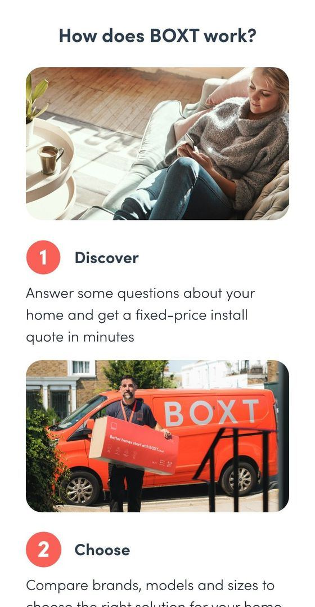
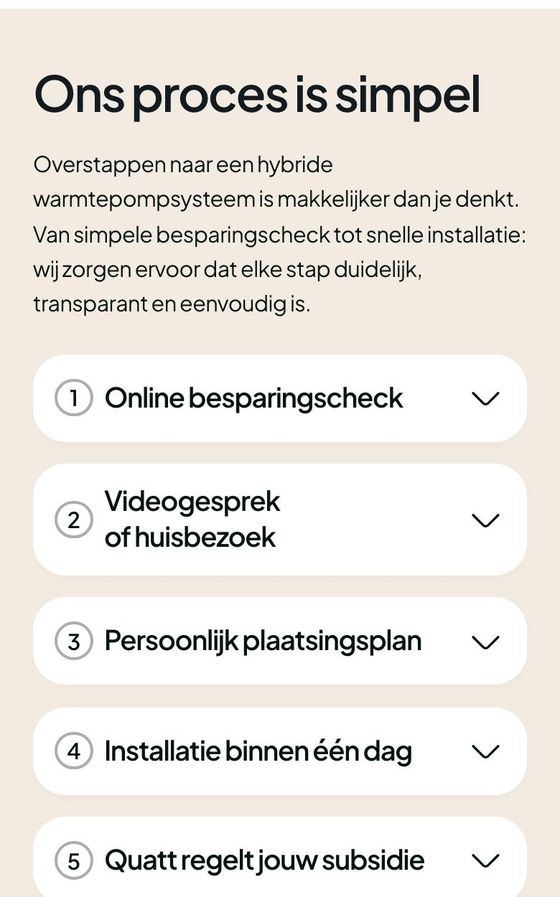
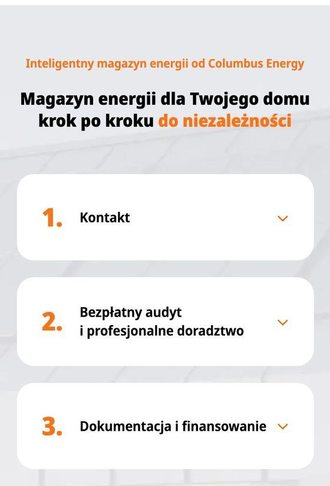
Cztery kroki „Tak to u nas wygląda” zostają co do słowa; pod nimi dwa wejścia: Jak zacząć kupowanie banku energii i Jak zacząć kupowanie pompy ciepła. Po kliknięciu: podstrona z sześcioma krokami, narzędziem albo produktem przy każdym i kaflami produktów w treści.
- 1Jak zacząć kupowanie banku energii
- 2Jak zacząć kupowanie pompy ciepła
Dowody (2)
- „Boxt ma trzy kroki „How does BOXT work?” (1 z 8 PL)”; „Wzorzec: jedna ścieżka krok po kroku, przy każdym kroku następne działanie”ai4cro-reports/docs/own_shop/grzejeko/projekt/zmiany/REKOMENDACJE_STRONA_GLOWNA.html § HP-07 Rynek
- „Cztery obecne kroki opisują, jak działa sklep, a nie jak zacząć”ai4cro-reports/docs/own_shop/grzejeko/projekt/zmiany/REKOMENDACJE_STRONA_GLOWNA.html § HP-07 UX
Zanim kupisz: poradniki z typem
Lista artykułów z ikoną typu (Jak kupić, Poradnik, Porównanie…), czasem czytania i linkiem; LP „Jak kupić bank energii” na pierwszym miejscu. Linkiem jest tylko opublikowany artykuł.
Dlaczego: Kupujący chce wiedzieć przed kliknięciem, czy artykuł odpowie na jego pytanie. Dziś dwa z trzech bloków nie są linkami i pokazują tekst środowiska testowego.
Stan: jest, do zmiany: usunąć „poradnik w przygotowaniu”, pokazywać tylko opublikowane (dziś 1), reszta znika albo „wkrótce” bez linku
Pokaż moduł: dziś, rynek i projekt
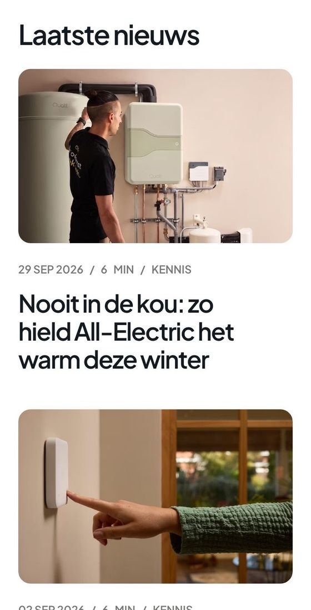
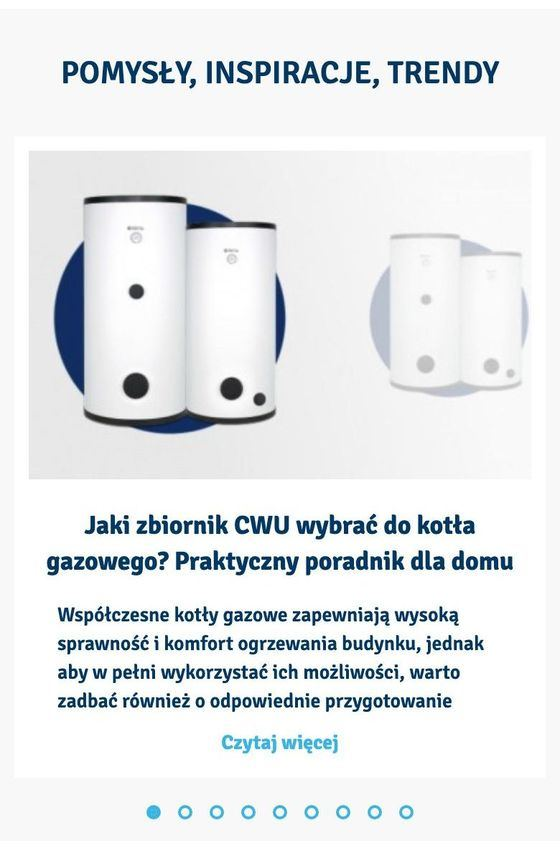
„Zanim kupisz”: trzy bloki bez linków i z napisem „poradnik w przygotowaniu” zamieniają się w listę artykułów z ikoną typu (Jak zacząć, Poradnik, Recenzja, Porównanie, Ranking, Kalkulacja), czasem czytania i linkiem. Linkiem jest tylko opublikowany artykuł; szkice są oznaczone „wkrótce”.
- 1Ikona i typ artykułu
- 2Czas czytania
- 3Szkic oznaczony „wkrótce”, nie linkiem
Dowody (4)
- „Sekcja z artykułami na stronie głównej jest w 2 z 8 sklepów PL i 4 z 11 razem”; Quatt: linia „data / minuty czytania / typ”ai4cro-reports/docs/own_shop/grzejeko/projekt/zmiany/REKOMENDACJE_STRONA_GLOWNA.html § HP-08 Rynek
- „Dziś bloki nie są linkami… i zawierają tekst środowiska testowego („poradnik w przygotowaniu”)”ai4cro-reports/docs/own_shop/grzejeko/projekt/zmiany/REKOMENDACJE_STRONA_GLOWNA.html § HP-08 UX
- wiedza: ikona typu + etykieta → tytuł pytaniem klienta → lead → czas czytania; „tytuł jest linkiem, strzałka; nigdy przycisk”grzejeko-shop/own_shop/design/ZASADY_ARCHITEKTURY_INFORMACJI.html § 1
- opublikowane: tylko jak-kupic-bank-energii (i LP pompy); „jak-nie-pomylic-sie…” i „jak-zaczac-kupowanie-banku…” to szkicegrzejeko-shop/own_shop/grzejeko/tresc/poradniki/
Porozmawiaj z doradcą
Imię, rola, godziny i kanały (telefon, wideo 15 min, czat lub e-mail) doradcy od banków i falowników; pod spodem kierownik montażu z uprawnieniami.
Dlaczego: Przy banku pytanie brzmi: kto odpowiada za dopasowanie do falownika i dotację. Dziś na stronie nie ma żadnego kontaktu z człowiekiem.
Stan: nowy, czeka na dane doradcy (HP-12); do tego czasu moduł ukryty
Pokaż moduł: rynek i projekt
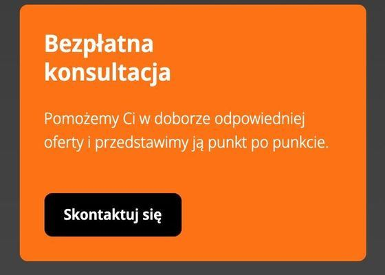

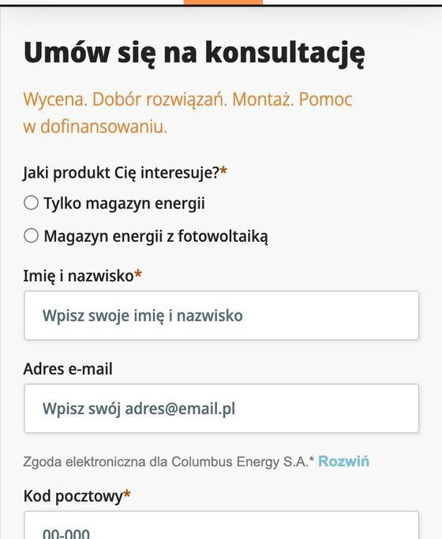
Blok „Porozmawiaj z doradcą”: imię, rola i godziny doradcy oraz cztery kanały (telefon, wideorozmowa 15 min, czat, formularz); pod spodem informacja o kierowniku montażu z uprawnieniami. Imię, zdjęcie i uprawnienia to pola do uzupełnienia. Ten sam element ma wersje „Nie wiesz, którą klasę?” na liście i „Pytanie o ten model” na karcie.
- 1Osoba z imieniem i godzinami
- 2Kanały kontaktu
- 3Odpowiedzialność za montaż nazwana
Dowody (4)
- dane kontaktowe w stopce 5 z 8 PL; baner doradcy Columbus i KupPanPompe (2 z 8 PL); Hello Watt przyklejony przycisk „Appeler”ai4cro-reports/docs/own_shop/grzejeko/projekt/zmiany/REKOMENDACJE_STRONA_GLOWNA.html § HP-12 Rynek
- „Dziś kontaktu z człowiekiem nie ma: ani telefonu, ani czatu, ani formularza”ai4cro-reports/docs/own_shop/grzejeko/projekt/zmiany/REKOMENDACJE_STRONA_GLOWNA.html § HP-12 UX
- osoba: zdjęcie → imię → rola i uprawnienia → kanały i godziny; „Zadzwoń”/„Napisz” jako tel:/mailto:, bez formularza-ścianygrzejeko-shop/own_shop/design/ZASADY_ARCHITEKTURY_INFORMACJI.html § 1
- telefon: null — „do uzupełnienia (Tomek)”grzejeko-shop/apps/storefront/src/lib/legal/sprzedawca.ts
O co pytają kupujący
Krótkie odpowiedzi na pytania o bank (dołożenie do istniejącej PV, kiedy wraca dotacja itd.) z treści karty.
Dlaczego: Domyka wątpliwości tych, którzy przewinęli do końca, bez wychodzenia ze sklepu. Na stronie głównej brak liczby z rynku.
Pokaż moduł: dziś i rynek
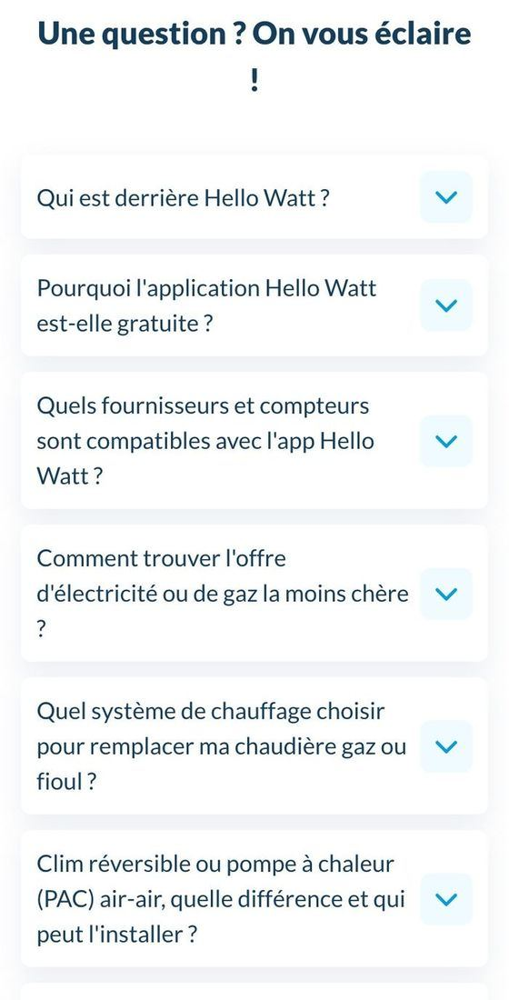
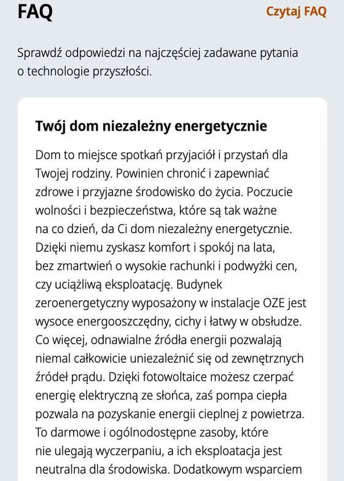
Dowody (2)
- zasada projektu, bez dowodu z rynku; „Strona główna linii = skrót tej rozdzielni: … artykuły, pytania”grzejeko-shop/own_shop/design/ZASADY_ARCHITEKTURY_INFORMACJI.html § 3
- sekcja „O co pytają kupujący”: dołożenie banku do PV, „Kiedy dostanę dotację?”ai4cro-reports/docs/own_shop/grzejeko/projekt/styl_F2/banki.html
Zobacz, jak wygląda montaż (wideo)
Miniatura z czasem i jednym zdaniem: co przyjeżdża, gdzie wisi bank, ile trwa podłączenie.
Dlaczego: Dowód słaby i nagrania nie ma; moduł ma miejsce w układzie, ale nie wyświetla się do nagrania.
Stan: nowy, ukryty do nagrania (opcjonalny)
Pokaż moduł: rynek i projekt
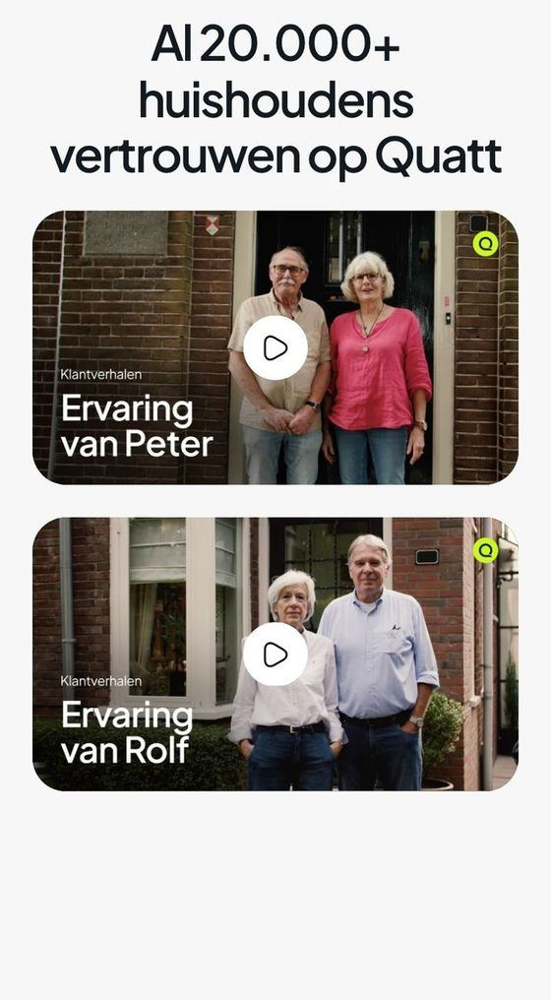
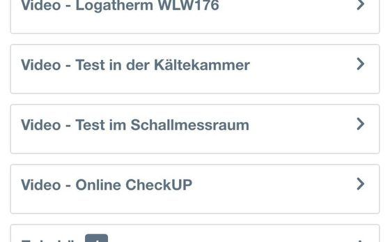
Miejsce na krótkie wideo „Zobacz, jak wygląda montaż”: miniatura z czasem, jedno zdanie streszczenia, link. Wideo jeszcze nie istnieje, więc moduł nie wyświetla się do nagrania; ta sekcja jest opcjonalna.
- 1Miniatura wideo z czasem
- 2Streszczenie: co widać w nagraniu
- 3Moduł czeka na nagranie
Dowody (1)
- „w 8 sklepach PL wideo na stronie głównej nie ma”; „Dowód jest słaby… element jest oznaczony jako opcjonalny”ai4cro-reports/docs/own_shop/grzejeko/projekt/zmiany/REKOMENDACJE_STRONA_GLOWNA.html § HP-10 Rynek/UX
Opinie i ranking popularności
Po pierwszych montażach: oceny z numerem zamówienia; po pierwszych tygodniach: ranking zamówień i odsłon z oknem 30 dni.
Dlaczego: Odpowiadają na „co kupują inni” i „czy sklep jest prawdziwy”, ale bez danych byłyby fałszem. Projekt zmian proponuje pusty stan opinii z datą; nowsze zasady AI (v0.3) mówią, że bez danych moduł nie pojawia się wcale — rekomenduję zasady.
Stan: nowy, ukryty do danych
Pokaż moduł: rynek i projekt
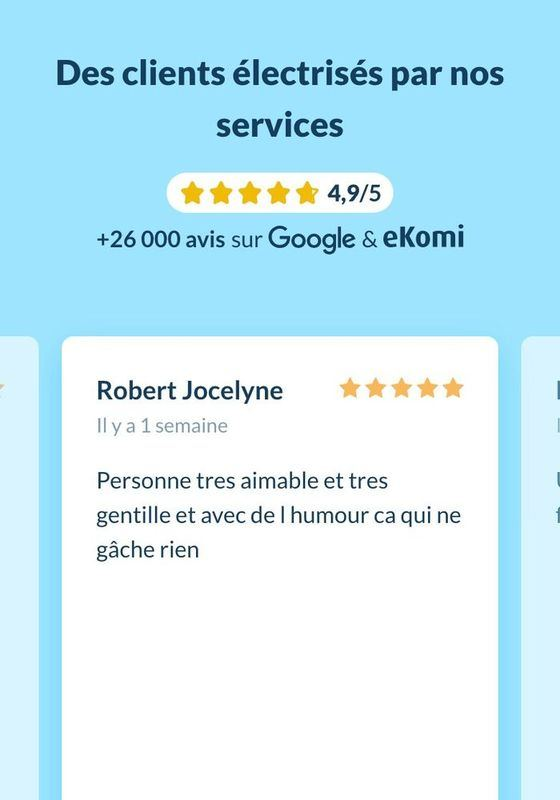
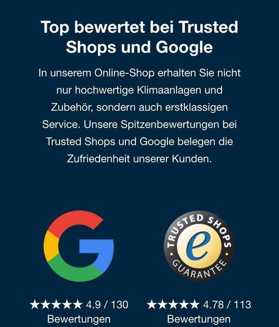
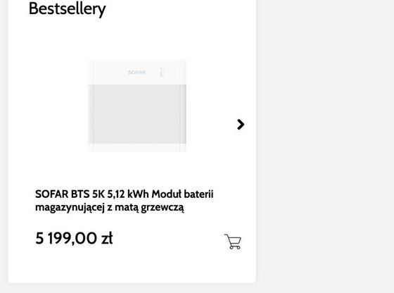
Sklep nie ma jeszcze sprzedaży, więc nie ma prawdziwych opinii; projekt nie pokazuje żadnej. Blok ma stan pusty z datą pierwszych montaży i opisem, jak zbieramy opinie: prośba 14 dni po montażu, opinia z numerem zamówienia, publikujemy wszystkie. Oceny i liczby pojawią się dopiero po zebraniu danych.
- 1Stan pusty z datą pierwszych montaży
- 2Mechanizm zbierania opinii
Moduł „Najczęściej zamawiane i czytane”: dwa rankingi (produkty z zamówień, artykuły z odsłon), każdy z oknem 30 dni. Przed pierwszymi danymi moduł się nie wyświetla, a kafle są ułożone według ceny; pokazany jest stan docelowy i próg. Żaden numer miejsca nie jest wymyślony.
- 1Stan przed danymi: wyjaśnienie i próg
- 2Stan docelowy: miejsca 1–3 z liczbą zamówień i odsłon
Dowody (4)
- „W PL blok opinii mają 2 z 8 sklepów”; Quatt 4,3 z 4 208 opinii w heroai4cro-reports/docs/own_shop/grzejeko/projekt/zmiany/REKOMENDACJE_STRONA_GLOWNA.html § HP-11 Rynek
- bestsellery 3 z 8 PL; Quatt „Meest gekozen”ai4cro-reports/docs/own_shop/grzejeko/projekt/zmiany/REKOMENDACJE_STRONA_GLOWNA.html § HP-09 Rynek
- „Opinie i rankingi bez danych nie pojawiają się wcale”grzejeko-shop/own_shop/design/ZASADY_ARCHITEKTURY_INFORMACJI.html § 5
- „do_startu: moduł ranking się nie pokazuje; kafle sortowane po cenie”grzejeko-shop/own_shop/grzejeko/MODEL_TRESCI.json § popularnosc
Stopka z danymi firmy
Kolumny linków, dane firmy (nazwa, NIP, adres), telefon, e-mail, godziny, linki prawne po polsku, później media społecznościowe.
Dlaczego: Zakup za kilkadziesiąt tysięcy wymaga sprawdzenia sprzedawcy; dane w stopce to najtańszy dowód, a kolumny stopki ma każdy sklep.
Stan: jest, do zmiany: dane sprzedawcy (status „potwierdzony” w sprzedawca.ts) i kontakt; media po założeniu profili
Pokaż moduł: dziś, rynek i projekt
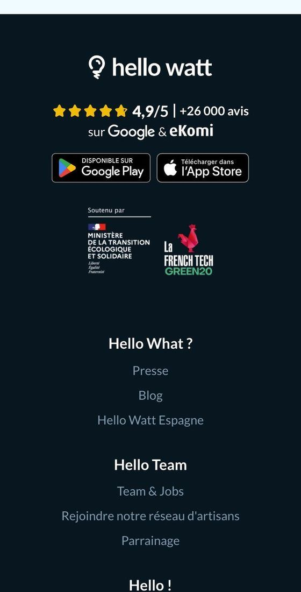
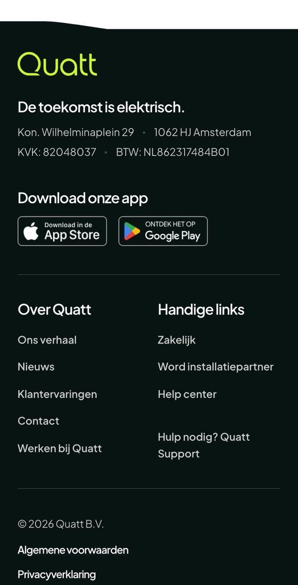
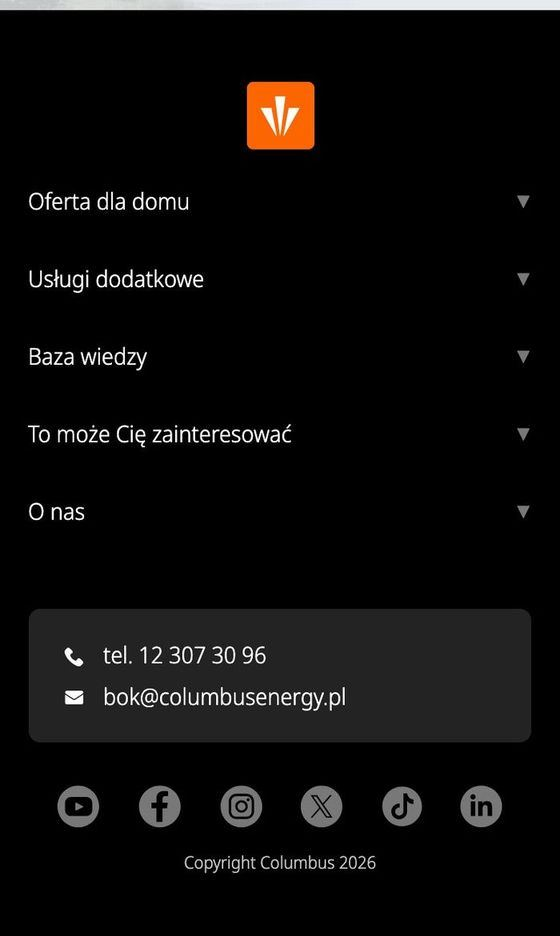
Stopka zostaje, a w kolumnie z opisem sklepu dochodzą telefon, e-mail, godziny, adres i dane firmy oraz linki do mediów społecznościowych. Wszystko to pola do uzupełnienia — dziś stopka mówi „dane firmy, NIP i uprawnienia: do uzupełnienia”. Linki prawne po polsku.
- 1Kontakt i dane firmy
- 2Media społecznościowe
- 3Linki prawne po polsku
Dowody (3)
- footer_columns 20/20, footer_bottom_bar 17/20, footer_social_media 13/20ai4cro-reports/docs/own_shop/grzejeko/konkurencja/BEST_PRACTICE_RYNKU_ENERGETYKA.html § Higiena / Strona główna
- „Dane kontaktowe w stopce (telefon, e-mail, godziny) — 5 z 8 — sklep dziś: brak”ai4cro-reports/docs/own_shop/grzejeko/konkurencja/LISTA_POPRAWEK_H2H.html § Strona główna
- dziś stopka: „dane firmy, NIP i uprawnienia: do uzupełnienia”ai4cro-reports/docs/own_shop/grzejeko/projekt/zmiany/REKOMENDACJE_STRONA_GLOWNA.html § HP-14
Czego na stronie głównej nie dajemy (14)
- Przełącznik linii (Banki · Pompy · Dom bez rachunków)Jest jedna linia; przełącznik z jedną pozycją nic nie przełącza. Decyzja Tomka 30.10 „na razie nie dajemy żadnych pomp”.
- Kafel pompy w „Najczęściej wybierane” (także „Cena wkrótce / Powiadom mnie”)Nie pokazujemy kafla z ceną, której nikt nie dostarczy; brak danych = element znika.
- Front i narzędzie „Dom bez rachunków” (pompa + bank)Wymaga pompy; narzędzie dom-bez-rachunkow jest w planie.
- Narzędzia pomp (dobór mocy, koszt ogrzewania, Czyste Powietrze, gotowość domu) — nawet jako „wkrótce”Obiecywałyby linię, której nie sprzedajemy; lista narzędzi ma pokazać tylko banki.
- Blok dotacji Czyste PowietrzeDotyczy tylko pomp; w wersji tylko-banki trzy bloki to PME 2.
- Nazwa „Mój Prąd” i kwoty „po dotacji” bez dopisku o zwrocieProgram na magazyny to PME 2; „po dotacji” musi mówić, że to zwrot po montażu (ryzyko zarzutu wprowadzania w błąd). F2 nadal ma „Mój Prąd”.
- Ceny klas z F2 (15 000 / 22 900 / 27 300 / 32 200 zł) i banki przykładoweBanki przykładowe są w drafcie; ceny realne 62–73% niżej od klas; kwoty tylko z Medusy.
- Przykładowe opinie i ocena 4,9 z F2Nie wolno pokazywać nieistniejących opinii nawet jako makiety.
- Ranking „Najczęściej zamawiane / czytane” przed danymiNumer miejsca bez zamówień jest fałszem; do startu moduł się nie pokazuje.
- Kafle wideo z czasem („4:30”, „2:05”) z F2Nagrań nie ma; sekcja nie wyświetla się do nagrania.
- Karuzela produktówZostaje siatka bez przewijania w bok (4 z 8 rywali ma karuzelę, ale karuzele zasłaniają elementy poza ekranem).
- Ikona konta3 z 8 sklepów; dopiero razem z kontem klienta po starcie.
- Bloki „poradnik w przygotowaniu” bez linkuTekst środowiska testowego widoczny na żywo; tylko opublikowane artykuły są linkami.
- Linki do /categories/pompy-ciepla i LP pompyStrony pomp zostają pod adresami, ale nikt do nich nie linkuje.
Lista banków
Uwagi: Po D37 lista urośnie z 4 klas do 34 wariantów (13 rodzin) — sortowanie i filtr falownika przestają być opcją. Kod: okruszki, H1, lead, pasek zaufania, chipy pojemności z licznikiem, siatka, moduł „Nie wiesz, która klasa?”, FAQ (3).
Okruszki, tytuł i jedno zdanie
Mówi, gdzie jesteś (grzejeko › Banki energii) i co tu dostaniesz: cena sprzętu osobno, montaż osobno, dotacja policzona, model dobrany do falownika.
Dlaczego: H1 listingu to jedna z dwóch norm listy na rynku.
Pokaż moduł: dziś i rynek
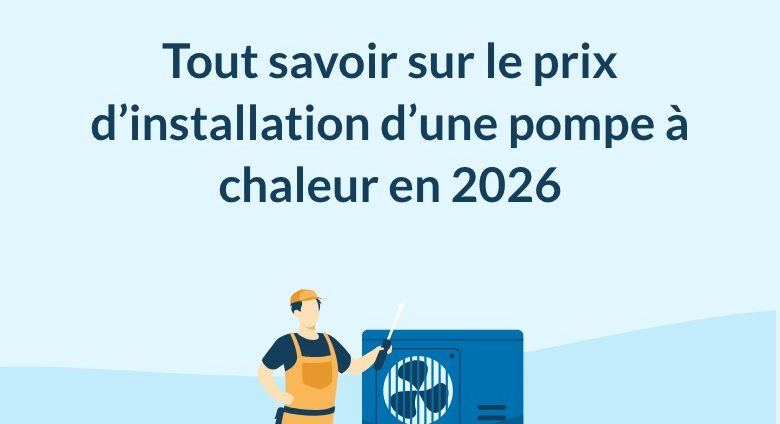
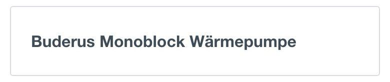
Dowody (2)
- listing_h1_heading 13/18ai4cro-reports/docs/own_shop/grzejeko/konkurencja/BEST_PRACTICE_RYNKU_ENERGETYKA.html § Higiena / Lista
- „Każdy ekran mówi, gdzie jesteś: okruszki …”grzejeko-shop/own_shop/design/ZASADY_ARCHITEKTURY_INFORMACJI.html § 2
Pasek dotacji PME 2 nad siatką
Jedna ramka: 800 zł/kWh, do 16 000 zł, od 10 kWh, z EMS; płacisz całość, zwrot po montażu; link do /dotacje.
Dlaczego: Lista to miejsce, gdzie kupujący porównuje klasy pod kątem dotacji, a dotacja zaczyna się od 10 kWh. Dziś na liście jest tylko liczba w kaflu.
Pokaż moduł: rynek i projekt
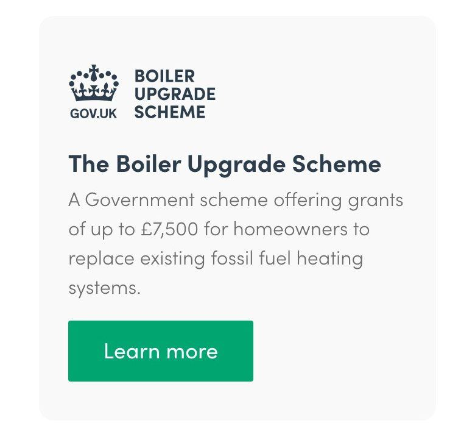
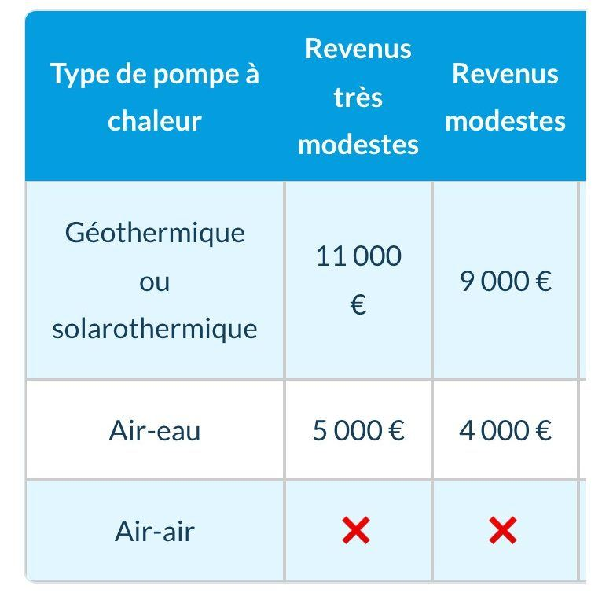
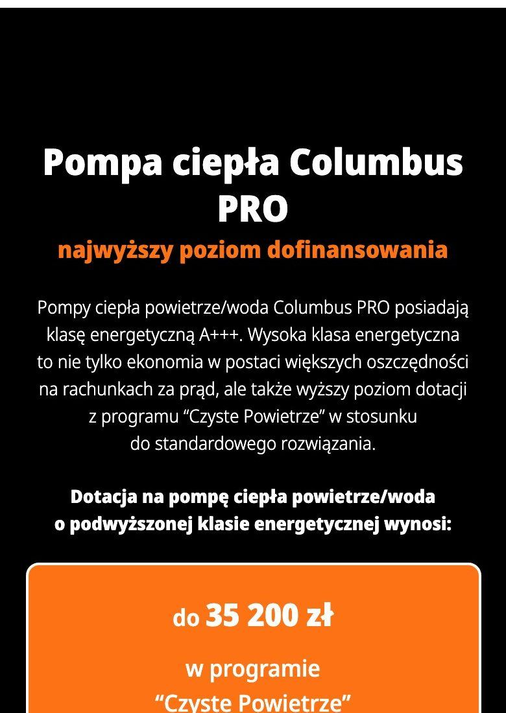
Zielony pasek nad siatką: „Dotacja Mój Prąd: 800 zł za kWh, do 16 000 zł” z warunkami w jednym zdaniu (sterownik EMS, koszt do 3 000 zł za kWh) i linkiem do narzędzia. Kwoty i warunki istnieją już w sklepie; pasek tylko je wynosi na listę.
- 1Nagłówek paska
- 2Kwota i limit
- 3Stan na datę i źródło; link do narzędzia
Dowody (3)
- dotacja 9 320 fraz, 37 pytań; „dotacja zaczyna się od 10 kWh”ai4cro-reports/docs/own_shop/grzejeko/projekt/zmiany/REKOMENDACJE_LISTA_PRODUKTOW.html § PLP-03 Kupujący
- „W PL blok o dotacji na liście mają 2 z 8 sklepów (Columbus, Boxt), razem z Hello Watt 3 z 10”ai4cro-reports/docs/own_shop/grzejeko/projekt/zmiany/REKOMENDACJE_LISTA_PRODUKTOW.html § PLP-03 Rynek
- dotacja tylko ≥ 10 kWh i ≥ 2 kWh/kWp; „po dotacji” = zwrot po czasiegrzejeko-shop/_kontekst/BUILD_PLAN_GRZEJEKO.md § D29, D31
Pojemność, sortowanie i filtry
Chipy pojemności zostają; dochodzi „Sortuj” (cena, cena po zwrocie dotacji, pojemność) i jeden przycisk „Filtry” z panelem: falownik, DC/AC, zasilanie awaryjne, dotacja.
Dlaczego: Zgodność z falownikiem to największe ograniczenie przy dokładaniu banku; prawdziwy katalog ma banki tylko dla 3 z 10 marek falowników, więc filtr falownika oszczędza klikania w niepasujące modele. Sortowanie jest normą PL.
Stan: jest, do zmiany: są chipy 4 przedziałów pojemności z licznikiem; brak sortowania i panelu filtrów
Pokaż moduł: dziś, rynek i projekt
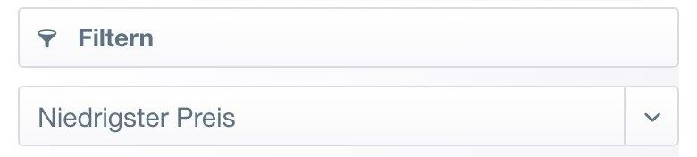
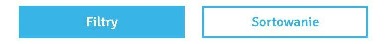
Chipy pojemności 5/10/15/20 kWh zostają. Dochodzą wybór „Sortuj” (cena, cena po dotacji, pojemność, popularność po danych) i przycisk „Filtry”, który otwiera panel: falownik, podłączenie DC lub AC, napięcie, zasilanie awaryjne, dotacja. Na liście nie ma nowych rzędów chipów.
- 1Sortowanie
- 2Filtry w panelu
- 3Wyjaśnienie sortowania „popularność”
Dowody (3)
- „Sortowanie jest w normie PL (5 z 8 sklepów) i razem (6 z 10); panel filtrów mają 3 z 8”ai4cro-reports/docs/own_shop/grzejeko/projekt/zmiany/REKOMENDACJE_LISTA_PRODUKTOW.html § PLP-01 Rynek
- „Lista produktów potrzebuje trzech rzeczy przed startem: sortowania, filtrów w panelu na telefonie i testu przycisku na kaflu”ai4cro-reports/docs/own_shop/grzejeko/konkurencja/LISTA_POPRAWEK_H2H.html § Co z tego wynika
- 13 rodzin / 34 warianty; „banki tylko dla 3 z 10 marek falowników (Deye, FoxESS, Sofar)”grzejeko-shop/_kontekst/BUILD_PLAN_GRZEJEKO.md § D37
Kafle banków
Każdy kafel w stałym składzie: zdjęcie → nazwa → bateria pojemności → cena sprzętu → z montażem i EMS → po zwrocie dotacji (zieleń) → „pasuje do” → jedna akcja.
Dlaczego: Kafel to jedyny element listy, który kupujący czyta w całości; przy wysokim bilecie pyta o koszt końcowy. Kafel produktu to norma rynku.
Stan: jest (skórka A, D23), do zmiany: kolejność liczb wg testu, „montaż od [data]” po kalendarzu montażu
Pokaż moduł: dziś, rynek i projekt
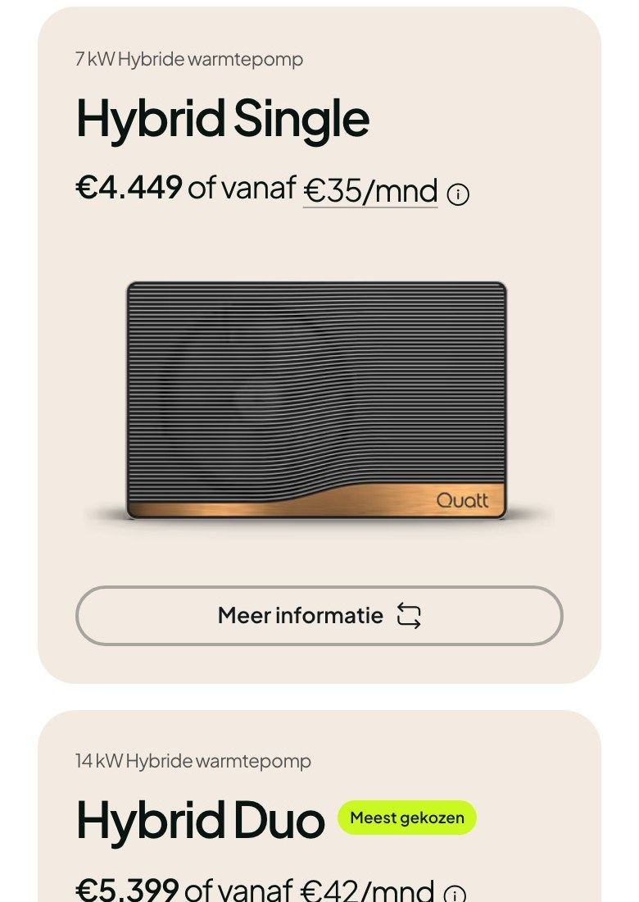

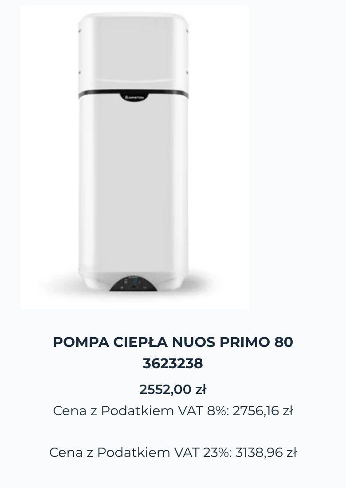
Główną liczbą kafla staje się „Twój koszt po dotacji, z montażem”; cena sprzętu, zł za kWh, montaż i EMS zostają niżej, a „pasuje do” i pasek pojemności zostają 1:1. Dochodzą plakietka „Najczęstsza pojemność w domach” (z danych rynku), wiersz „montaż od [data]” i miejsce na ocenę po pierwszych opiniach. Przycisk: „Zobacz paragon” kontra „Do koszyka z montażem” rozstrzyga test A/B.
- 1Plakietka rynkowa
- 2Cena po dotacji z montażem jako główna liczba
- 3Termin montażu
- 4Ocena po opiniach
- 5Przycisk
Dowody (4)
- product_tile 12/18ai4cro-reports/docs/own_shop/grzejeko/konkurencja/BEST_PRACTICE_RYNKU_ENERGETYKA.html § Higiena / Lista
- dziś główna liczba (22 px) to cena sprzętu, a koszt po dotacji w dwóch wierszach 13 px; dodanie do koszyka z kafla 5 z 8 PL, 5 z 10 razemai4cro-reports/docs/own_shop/grzejeko/projekt/zmiany/REKOMENDACJE_LISTA_PRODUKTOW.html § PLP-02 Kupujący/UX
- anatomia kafla produktu, stały skład; „Brak danych = element znika”grzejeko-shop/own_shop/design/ZASADY_ARCHITEKTURY_INFORMACJI.html § 1
- „Termin na każdym kaflu… my pokażemy „montaż od [data]””ai4cro-reports/docs/own_shop/grzejeko/konkurencja/LISTA_POPRAWEK_H2H.html § Najlepsze praktyki
Narzędzia (zamiast „Nie wiesz, która klasa?”)
Ta sama lista narzędzi banku co na stronie głównej: dobór do falownika działa, reszta „wkrótce”.
Dlaczego: Przycisk „Dobierz bank” to dziś jedno narzędzie; projekt zmian zastępuje go wspólną listą.
Stan: jest, do zmiany: jeden moduł doboru → lista narzędzi
Pokaż moduł: dziś i rynek
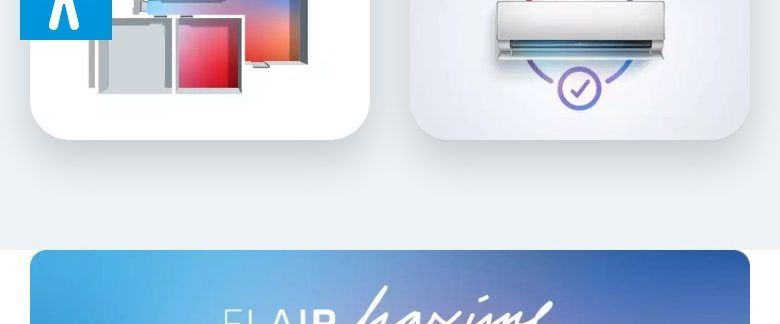
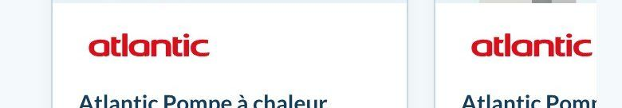
Dowody (2)
- „Sekcja „Nie wiesz, która klasa?” z przyciskiem „Dobierz bank” zostaje zastąpiona listą narzędzi (wspólna ze stroną główną)”ai4cro-reports/docs/own_shop/grzejeko/projekt/zmiany/REKOMENDACJE_LISTA_PRODUKTOW.html § PLP-04
- z każdego konkretu wyjścia do pozostałych czasowników linii (Kup · Dobierz · Poradnik · Montaż i dotacje)grzejeko-shop/own_shop/design/ZASADY_ARCHITEKTURY_INFORMACJI.html § 2
Jak kupić bank energii (skrót LP) + jeden artykuł
Karta wejścia do LP „Jak kupić bank energii” i jeden powiązany opublikowany artykuł z ikoną typu.
Dlaczego: Kupujący na liście jest w preselekcji i pyta „od czego zacząć”; ma dostać odpowiedź bez opuszczania listy.
Pokaż moduł: dziś, rynek i projekt
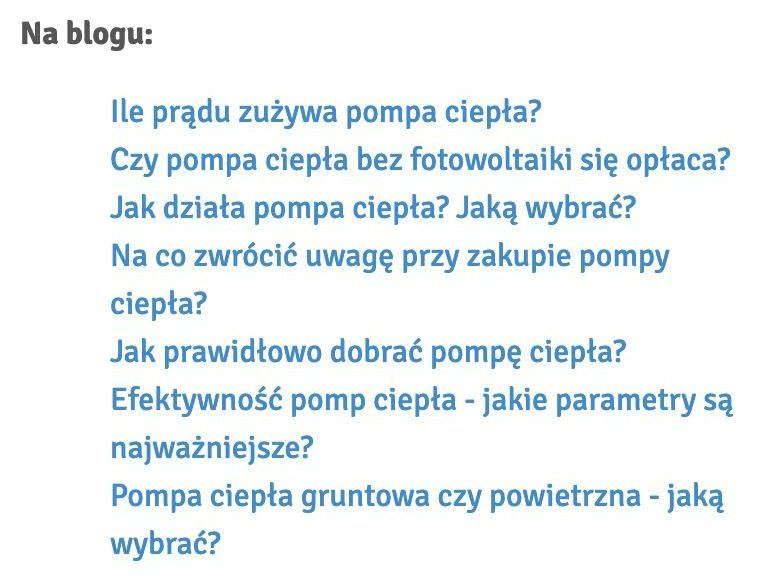
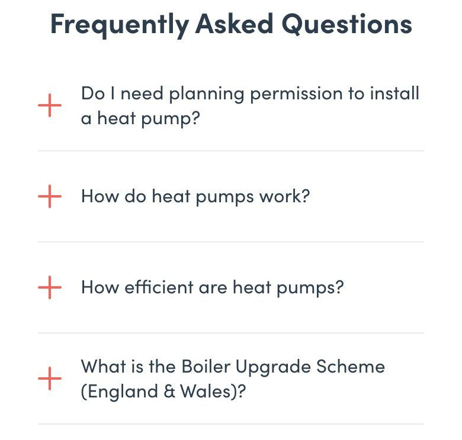
Pod siatką: skrót „Jak zacząć kupowanie banku energii” z linkiem do podstrony, jeden powiązany artykuł z ikoną typu, a pod nimi FAQ „Zanim wybierzesz klasę” z trzema pytaniami 1:1. Sekcja „Nie wiesz, która klasa?” z przyciskiem „Dobierz bank” zostaje zastąpiona listą narzędzi (wspólna ze stroną główną).
- 1Jak zacząć kupowanie banku
- 2Powiązany artykuł z typem
Dowody (2)
- „Tekst poradnika pod listą ma 4 z 8 sklepów PL… FAQ 4 z 8”; Bridom blok „Na blogu:”ai4cro-reports/docs/own_shop/grzejeko/projekt/zmiany/REKOMENDACJE_LISTA_PRODUKTOW.html § PLP-04 Rynek
- „Tekst poradnika pod listą — 4 — … pod listą skrót „Jak zacząć” + 3 pytania”ai4cro-reports/docs/own_shop/grzejeko/konkurencja/LISTA_POPRAWEK_H2H.html § Lista produktów
Zanim wybierzesz klasę (3 pytania)
kWh na kWp, DC czy AC, co wchodzi w cenę montażu.
Dlaczego: Trzy pytania odpowiadają na wątpliwości z listy; projekt zmian zostawia je 1:1.
Pokaż moduł: dziś i rynek

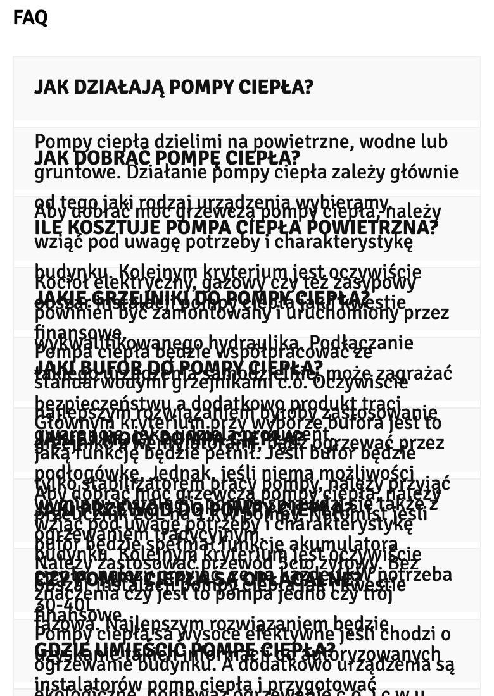
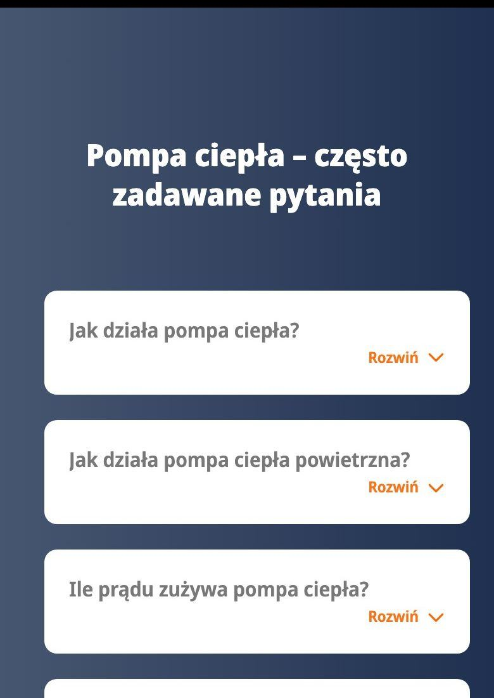
Dowody (1)
- „FAQ odpowiada na trzy pytania z listy (kWh na kWp, DC czy AC, co w cenie montażu)”; FAQ 4 z 8 PLai4cro-reports/docs/own_shop/grzejeko/projekt/zmiany/REKOMENDACJE_LISTA_PRODUKTOW.html § PLP-04
Porównanie przedziałów pojemności (tabela)
Tabela: przedział, cena sprzętu, z montażem i EMS, po zwrocie dotacji.
Dlaczego: Dowód słaby przy czterech pozycjach; przy prawdziwym katalogu (34 warianty) staje się sensowny.
Stan: nowy, opcjonalny
Pokaż moduł: rynek i projekt

Tabela: klasa, cena sprzętu, z montażem i EMS, po dotacji. Cztery wiersze, cztery kolumny, bez przewijania w bok. Element opcjonalny: lista ma tylko cztery pozycje i kafle już pokazują pasek pojemności.
- 1Tabela porównania
- 2Kolumna po dotacji
Dowody (1)
- „porównywarka produktów… 2 z 8 sklepów PL”; „Zostaje w projekcie jako wariant do testu, gdy lista urośnie”ai4cro-reports/docs/own_shop/grzejeko/projekt/zmiany/REKOMENDACJE_LISTA_PRODUKTOW.html § PLP-05
Nie wiesz, którą pojemność? Zadzwoń
Wersja modułu doradcy na liście.
Dlaczego: Ten sam element co na stronie głównej, w wersji pod pytanie z listy.
Stan: nowy, czeka na dane doradcy
Pokaż moduł: rynek
Dowody (1)
- „Ten sam element ma wersje „Nie wiesz, którą klasę?” na liście i „Pytanie o ten model” na karcie”ai4cro-reports/docs/own_shop/grzejeko/projekt/zmiany/REKOMENDACJE_STRONA_GLOWNA.html § HP-12
Jak kupić bank energii (strona wejścia z ruchu)
Uwagi: dane.json (opublikowane) ma 12 modułów: naglowek_artykulu, w_skrocie, bramka, kroki, pojecia, typy_produktow, na_co_patrzec, narzedzia, kafle_produktow, faq, powiazane, zrodla. Model typu jak_kupic przewiduje też paragon, wideo, ekspert. Proponowana kolejność = ZASADY § 3 (bramka przed „W skrócie”).
Nagłówek z pytaniem i leadem
Tytuł „Jak kupić bank energii”, lead, autor, kto sprawdził, data aktualizacji, czas czytania, okruszki do Banków energii.
Dlaczego: To strona wejścia z ruchu (Google, reklama, AI), więc musi od razu powiedzieć, że odpowiada na pytanie i kto za tym stoi.
Pokaż moduł: dziś
Dowody (2)
- „nagłówek z pytaniem i leadem → bramka sytuacji… To jest strona wejścia z ruchu (reklama, Google, AI), nie strona główna”grzejeko-shop/own_shop/design/ZASADY_ARCHITEKTURY_INFORMACJI.html § 3
- „Doradca grzejeko, sprawdził kierownik montażu · aktualizacja 28.10.2026 · 6 min czytania”ai4cro-reports/docs/own_shop/grzejeko/projekt/styl_F2/jak-zaczac-bank.html
Od czego zaczynasz? (bramka sytuacji)
Trzy wyjścia: Mam fotowoltaikę → krok 1; Dopiero planuję → poradnik; Wiem, czego chcę → banki z ceną.
Dlaczego: Rozdziela ruch: kto wie, czego chce, nie musi czytać siedmiu kroków. Te same trzy sytuacje są na stronie głównej.
Stan: jest, do zmiany: dziś stoi PO „W skrócie” (zasady: przed); wyjście „Dopiero planuję” prowadzi do nieopublikowanego poradnika — do czasu publikacji kierować na #pojecia albo na krok 1
Pokaż moduł: dziś i rynek
Dowody (3)
- bramka sytuacji na pierwszym ekranie; „Do testu A/B: bramka przed „W skrócie” vs po”grzejeko-shop/own_shop/design/ZASADY_ARCHITEKTURY_INFORMACJI.html § 3
- „Pierwsze pytanie narzędzia wprost na stronie: 7 z 12, ale tylko 3 na pierwszym ekranie… Kandydat A/B dla LP: bramka sytuacji vs pierwsze pytanie doboru w hero”grzejeko-shop/own_shop/design/ZASADY_ARCHITEKTURY_INFORMACJI.html § Referencje
- „Dopiero planuję” → jak-nie-pomylic-sie-przy-wyborze-magazynu-energii, który ma tylko szkicgrzejeko-shop/own_shop/grzejeko/tresc/poradniki/jak-kupic-bank-energii/dane.json
W skrócie
Cztery–pięć zdań z liczbami i źródłami: zacznij od falownika, pojemność z zużycia po zmroku, dotacja PME 2, widełki rynku z montażem.
Dlaczego: Kupujący z wyszukiwarki dostaje odpowiedź w 20 sekund; liczby rynkowe mają odnośnik [n] z datą.
Pokaż moduł: dziś
Dowody (2)
- „W skrócie”: falownik, pojemność, dotacja, „Rynek za 10 kWh z montażem bierze 25 000–40 000 zł”ai4cro-reports/docs/own_shop/grzejeko/projekt/styl_F2/jak-zaczac-bank.html
- „Liczba rynkowa = odnośnik [n] do źródła z datą odczytu”grzejeko-shop/own_shop/design/ZASADY_ARCHITEKTURY_INFORMACJI.html § 4
Kroki zakupu (stepper)
Siedem kroków od falownika do zamówienia z montażem; każdy kończy się działającym wyjściem: narzędziem, produktem albo listą z ceną.
Dlaczego: Kupujący potrzebuje ścieżki od sytuacji do zamówienia, a nie listy artykułów; wzorzec rynkowy to jedna ścieżka z następnym działaniem przy każdym kroku.
Stan: jest (7 kroków w dane.json); do sprawdzenia: kroki 1 i 5 nie mogą kończyć się narzędziem „wkrótce” (zgodność falownika, dotacja PME 2)
Pokaż moduł: dziś i rynek
Dowody (3)
- „Kupujący potrzebuje ścieżki od sytuacji do zamówienia”; Boxt, Quatt, Hello Watt: kroki/przewodnikiai4cro-reports/docs/own_shop/grzejeko/projekt/zmiany/REKOMENDACJE_STRONA_GLOWNA.html § HP-07 Kupujący/Rynek
- iHeat: „Get your estimate · Pick a package · Choose install date”ai4cro-reports/docs/own_shop/grzejeko/konkurencja/BEST_PRACTICE_RYNKU_ENERGETYKA.html § Best practice / Karta
- każdy krok kończy się działającym wyjściem; „narzędzie w planie nie jest wyjściem kroku”grzejeko-shop/own_shop/design/ZASADY_ARCHITEKTURY_INFORMACJI.html § 3, § 8
Pojęcia
Krótkie definicje: DC/AC, falownik hybrydowy, EMS, pojemność użyteczna, net-billing.
Dlaczego: Usuwa barierę słów, zanim kupujący porówna oferty.
Pokaż moduł: dziś
Dowody (1)
- zasada projektu, bez dowodu z rynku; moduł w kolejności typu jak_kupicgrzejeko-shop/own_shop/design/ZASADY_ARCHITEKTURY_INFORMACJI.html § 3
Rodzaje banków
Bank DC do falownika hybrydowego kontra bank AC z własnym falownikiem; dla kogo który.
Dlaczego: Zgodność z falownikiem (DC/AC) to ograniczenie nr 1 przy wyborze banku.
Pokaż moduł: dziś
Dowody (1)
- „Zgodność z falownikiem jest ograniczeniem nr 1 (bank AC kontra DC)”ai4cro-reports/docs/own_shop/grzejeko/projekt/zmiany/REKOMENDACJE_KARTA_PRODUKTU.html § PDP-08 Kupujący
Na co patrzeć w ofercie
Lista kryteriów poza pojemnością: chemia ogniw, gwarancja, backup, co jest w cenie montażu.
Dlaczego: Zasilanie awaryjne to najczęstsze rozczarowanie; kupujący porównuje ceny bez montażu.
Pokaż moduł: dziś
Dowody (2)
- „Backup jest najczęstszym rozczarowaniem”ai4cro-reports/docs/own_shop/grzejeko/projekt/zmiany/REKOMENDACJE_KARTA_PRODUKTU.html § PDP-07 Kupujący
- poradnik na pytanie P1 70,5 „na co patrzeć poza pojemnością?”grzejeko-shop/_kontekst/BUILD_PLAN_GRZEJEKO.md § B3
Narzędzia do tego poradnika
Ta sama lista narzędzi banku; tu wolno „wkrótce”.
Dlaczego: Jedyne miejsce LP, gdzie narzędzie w planie może się pokazać.
Pokaż moduł: dziś i rynek
Dowody (1)
- „narzędzia (tu wolno „wkrótce”)”grzejeko-shop/own_shop/design/ZASADY_ARCHITEKTURY_INFORMACJI.html § 3, § 5
Banki energii z ceną montażu
Kafle prawdziwych banków z ceną sprzętu, z montażem i po zwrocie dotacji; kotwica #produkty dla bramki.
Dlaczego: Każda strona sklepu ma listing i kupno; LP bez kafli nie jest stroną sklepu.
Pokaż moduł: dziś i rynek
Dowody (2)
- „moduł kafli produktów zawsze obecny i nigdy pusty”grzejeko-shop/_kontekst/BUILD_PLAN_GRZEJEKO.md § D22
- „kafle produktów z ceną montażu → paragon”grzejeko-shop/own_shop/design/ZASADY_ARCHITEKTURY_INFORMACJI.html § 3
Paragon zestawu
Ten sam paragon co na stronie głównej, pod kaflami: sprzęt, montaż, EMS, do zapłaty teraz, zwrot dotacji.
Dlaczego: Kolejność typu jak_kupic w modelu i zasadach przewiduje paragon po kaflach; w dane.json LP go nie ma.
Stan: nowy (brak w dane.json LP)
Dowody (2)
- moduly_domyslne zawierają „paragon”, „wideo”, „ekspert”grzejeko-shop/own_shop/grzejeko/MODEL_TRESCI.json § typy_stron.jak_kupic
- „Montaż jako produkt… to robi nasz paragon”ai4cro-reports/docs/own_shop/grzejeko/konkurencja/BEST_PRACTICE_RYNKU_ENERGETYKA.html § Co z tego dla grzejeko
Ekspert
Doradca od banków i falowników z kanałami kontaktu.
Dlaczego: Ten sam moduł co na stronie głównej; czeka na dane.
Stan: nowy, czeka na dane
Pokaż moduł: rynek
Dowody (2)
- „ekspert” w moduly_domyslnegrzejeko-shop/own_shop/grzejeko/MODEL_TRESCI.json § typy_stron.jak_kupic
- dane doradcy przekazuje Tomekai4cro-reports/docs/own_shop/grzejeko/projekt/zmiany/REKOMENDACJE_STRONA_GLOWNA.html § HP-12
Pytania po lekturze
Dołożenie banku do PV, ile trwa montaż, kiedy wraca dotacja.
Dlaczego: Domyka wątpliwości przed przejściem do kafli lub koszyka.
Pokaż moduł: dziś i rynek
Dowody (1)
- „Pytania po lekturze”: trzy pytaniaai4cro-reports/docs/own_shop/grzejeko/projekt/styl_F2/jak-zaczac-bank.html
Czytaj dalej
Powiązane artykuły (tylko opublikowane).
Dlaczego: zasada projektu, bez dowodu z rynku.
Stan: jest, do zmiany: pokazywać tylko opublikowane
Pokaż moduł: dziś
Dowody (1)
- zasada projektu, bez dowodu z rynku; wyjścia do pozostałych czasowników liniigrzejeko-shop/own_shop/design/ZASADY_ARCHITEKTURY_INFORMACJI.html § 2
Źródła liczb
Lista [n] z nazwą źródła i datą odczytu.
Dlaczego: Każda liczba rynkowa ma pochodzenie — zasada sklepu.
Pokaż moduł: dziś
Dowody (2)
- „Liczba rynkowa = odnośnik [n] do źródła z datą odczytu, na końcu strony”grzejeko-shop/own_shop/design/ZASADY_ARCHITEKTURY_INFORMACJI.html § 4
- LP banku: źródła [21]–[24] gov.plgrzejeko-shop/_kontekst/BUILD_PLAN_GRZEJEKO.md § D27
Jak ta strona łączy się ze stroną główną: LP to strona wejścia z ruchu, nie strona główna; strona główna jest jej skrótem (ZASADY § 3). Obie mają tę samą bramkę trzech sytuacji, tę samą listę narzędzi i te same kafle banków.
Karta produktu (bank energii)
Dziś to karta FoxESS EP (szkic rich z 30.10): panel zakupu i sekcje treści zamiast zakładek. Uzasadnienia poniżej powstały na starszej karcie przykładowej, więc część „do zmiany” karta EP już zamyka; ramka „dziś” pokazuje, jak jest naprawdę.
Okruszki i galeria
Ścieżka grzejeko › Banki energii › model oraz zdjęcia (do czasu zdjęć dostawcy: sceny poglądowe).
Dlaczego: Zdjęcie główne to norma karty.
Pokaż moduł: dziś i rynek
Dowody (2)
- pdp_image_main 12/19ai4cro-reports/docs/own_shop/grzejeko/konkurencja/BEST_PRACTICE_RYNKU_ENERGETYKA.html § Higiena / Karta
- higiena karty: „okruszki, tytuł, cena, VAT, ilość, koszyk, zakładki, opis, cechy”ai4cro-reports/docs/own_shop/grzejeko/konkurencja/BEST_PRACTICE_RYNKU_ENERGETYKA.html § Co z tego dla grzejeko
Nazwa i bateria pojemności
Nazwa modelu i bateria 0–20 kWh z wypełnieniem.
Dlaczego: Tytuł to norma; pojemność rozstrzyga 95,9% wyszukań.
Pokaż moduł: dziś i rynek
Dowody (2)
- pdp_product_title 15/19ai4cro-reports/docs/own_shop/grzejeko/konkurencja/BEST_PRACTICE_RYNKU_ENERGETYKA.html § Higiena / Karta
- „pojemność rozstrzyga 95,9% wyszukań”ai4cro-reports/docs/own_shop/grzejeko/projekt/zmiany/REKOMENDACJE_STRONA_GLOWNA.html § HP-05 Kupujący
Cena: koszt z montażem i po zwrocie dotacji
Jedna główna liczba „Twój koszt z montażem, po zwrocie dotacji”, pod nią składniki i link do paragonu; cena sprzętu z VAT i zł za kWh jako druga; przy obniżce najniższa cena z 30 dni.
Dlaczego: Kupujący pyta „ile zapłacę łącznie”, a dziś liczba końcowa jest trzecia w kolejności czytania. Najniższa cena z 30 dni to obowiązek przy każdej obniżce.
Stan: jest, do zmiany: dziś główna liczba = cena sprzętu (34 px); dodać „najniższa cena z 30 dni” do szablonu
Pokaż moduł: dziś, rynek i projekt

Nad przyciskiem stoi jedna główna liczba: „Twój koszt po dotacji, z montażem” 22 900 zł. Pod nią w jednej linii składniki (sprzęt, montaż, EMS, dotacja) z linkiem „Zobacz paragon”; cena sprzętu z VAT i zł za kWh jest liczbą drugorzędną. Przy każdej obniżce dochodzi „najniższa cena z 30 dni”. Przyciski „Do koszyka z montażem” i „Dodaj sam sprzęt” zostają 1:1.
- 1Koszt po dotacji z montażem jako główna liczba
- 2Rozbicie w jednej linii
- 3Najniższa cena z 30 dni
Dowody (4)
- „Dziś liczba końcowa jest trzecia w kolejności czytania: najpierw cena sprzętu 24 900 zł (34 px), potem paragon (741 px)”ai4cro-reports/docs/own_shop/grzejeko/projekt/zmiany/REKOMENDACJE_KARTA_PRODUKTU.html § PDP-01 Kupujący
- Solvolte: „VAT wliczony”, rata, „najniższa cena z 30 dni”, dostawa; „Informację o VAT przy cenie ma 5 z 8 sklepów PL”ai4cro-reports/docs/own_shop/grzejeko/projekt/zmiany/REKOMENDACJE_KARTA_PRODUKTU.html § PDP-01 Rynek
- cena za kWh pod ceną: 1 (Signature Solar „$188.81 / kWh”)grzejeko-shop/own_shop/design/ZASADY_ARCHITEKTURY_INFORMACJI.html § Referencje
- w karcie „Do zapłaty teraz (całość)” przed wierszem zwrotugrzejeko-shop/_kontekst/BUILD_PLAN_GRZEJEKO.md § D31
Kluczowe cechy w punktach
Cztery punkty przy cenie: pojemność nominalna i użyteczna, DC do falownika hybrydowego, EMS w komplecie (warunek dotacji), ogniwa LiFePO4 i cykle.
Dlaczego: Cechy w punktach to norma karty na rynku; dziś leżą w tabeli 3 700 px niżej.
Stan: nowy (wartości z karty dostawcy)
Pokaż moduł: rynek i projekt

Cztery punkty pod ceną: pojemność nominalna i użyteczna, podłączenie DC do falownika hybrydowego, sterownik EMS w komplecie (warunek dotacji), ogniwa LiFePO4 i liczba cykli. Pasek pojemności zostaje 1:1; punkty nie powtarzają całej tabeli parametrów.
- 1Pojemność użyteczna
- 2Podłączenie DC
- 3EMS w komplecie
- 4Chemia i cykle
Dowody (3)
- pdp_key_features 13/19ai4cro-reports/docs/own_shop/grzejeko/konkurencja/BEST_PRACTICE_RYNKU_ENERGETYKA.html § Higiena / Karta
- 5 z 8 PL, 6 z 10 razem; „reszta w tabeli 3 700 px niżej”ai4cro-reports/docs/own_shop/grzejeko/projekt/zmiany/REKOMENDACJE_KARTA_PRODUKTU.html § PDP-04 Rynek/UX
- „Kluczowe cechy w punktach — 5 — sklep dziś: pasek z pojemnością”ai4cro-reports/docs/own_shop/grzejeko/konkurencja/LISTA_POPRAWEK_H2H.html § Karta
Dostępność, termin montażu, dostawa
Trzy linie: „Dostępny · montaż od [data]”, „Dostawa sprzętu w cenie montażu”, „Odpowiedź doradcy do [X] godzin”.
Dlaczego: Przy banku termin montażu jest produktem; dziś brak jakiejkolwiek informacji o terminie.
Stan: nowy, czeka na dostawcę i kalendarz montażu
Pokaż moduł: rynek i projekt
Trzy linie pod ceną: „Dostępny · montaż od [data]”, „Dostawa sprzętu w cenie montażu” i „Odpowiedź doradcy: do [X] godzin”. Dane (data, dostępność) przyjdą po wyborze dostawcy; do tego czasu pola są puste. Zielona kropka znaczy „dostępny”.
- 1Dostępność i termin montażu
- 2Dostawa
- 3Czas odpowiedzi doradcy
Dowody (2)
- „Stan magazynu ma 4 z 8 sklepów PL…, opcje dostawy 3 z 8”ai4cro-reports/docs/own_shop/grzejeko/projekt/zmiany/REKOMENDACJE_KARTA_PRODUKTU.html § PDP-02 Rynek
- „Stan magazynu — 4 — „dostępny, montaż od [data]” przy cenie”ai4cro-reports/docs/own_shop/grzejeko/konkurencja/LISTA_POPRAWEK_H2H.html § Karta
Sprawdź swój falownik (przy panelu)
Wybór marki/modelu falownika z wynikiem „pasuje, podłączenie DC” albo „nie pasuje — zobacz bank AC / zadzwoń”.
Dlaczego: Zgodność to ograniczenie nr 1, a prawdziwy katalog ma banki tylko dla 3 z 10 marek falowników; jawna zgodność jest rzadka na rynku i jest wyróżnikiem.
Stan: jest, do zmiany: dziś lista marek jako chipy w sekcji „Pasuje do falownika” niżej; przenieść wynik pod panel
Pokaż moduł: projekt
Trzy wejścia pod panelem zakupu: „Sprawdź swój falownik” (lista marek z wynikiem „pasuje, podłączenie DC”), „Policz oszczędność” i „Policz dotację” (oba „wkrótce”). Zgodność z falownikiem jest największą obawą, więc to narzędzie ma miejsce na karcie, nie w osobnym konfiguratorze.
- 1Sprawdzenie falownika na karcie
- 2Narzędzie oszczędności
- 3Narzędzie dotacji
Dowody (3)
- „Zgodność z falownikiem jest ograniczeniem nr 1”; konfigurator na karcie 2 z 8 PLai4cro-reports/docs/own_shop/grzejeko/projekt/zmiany/REKOMENDACJE_KARTA_PRODUKTU.html § PDP-08
- Sofar: „Kompatybilność: Sofar HYD5-20KTL” — „jedyna jawna zgodność bank↔falownik na rynku”; Signature Solar: lista 8 marekai4cro-reports/docs/own_shop/grzejeko/konkurencja/BEST_PRACTICE_RYNKU_ENERGETYKA.html § Best practice / Karta
- „banki tylko dla 3 z 10 marek falowników”; dla marek bez zgodnego banku jawny stangrzejeko-shop/_kontekst/BUILD_PLAN_GRZEJEKO.md § D37
Dodatki przy zakupie
Pola wyboru z ceną: skrzynka zasilania awaryjnego, licznik, wymagane akcesoria (np. skrzynka HV) — trafiają do koszyka i paragonu.
Dlaczego: Backup to najczęstsze rozczarowanie; decyzja przy przycisku rozstrzyga to przed zamówieniem.
Stan: jest częściowo (akcesoria wymagane); do zmiany: skrzynka awaryjna jako pole wyboru
Pokaż moduł: rynek i projekt
Pod ceną dwa pola wyboru: skrzynka zasilania awaryjnego (+ 2 200 zł, backup dla wybranych obwodów) i licznik energii (cena do uzupełnienia). Pole zaznaczone trafia do koszyka razem z bankiem i montażem; sterownik EMS jest już pozycją paragonu.
- 1Backup jako akcesorium
- 2Licznik energii
Dowody (3)
- „Akcesoria przy produkcie ma 3 z 8 sklepów PL… i 4 z 10 razem”; Flairmax „Zubehör” w polu zakupuai4cro-reports/docs/own_shop/grzejeko/projekt/zmiany/REKOMENDACJE_KARTA_PRODUKTU.html § PDP-07 Rynek
- Anker SOLIX: montaż jako opcja z ceną w bloku zakupu; Signature Solar: falowniki do zaznaczenia nad „ADD TO CART”ai4cro-reports/docs/own_shop/grzejeko/konkurencja/BEST_PRACTICE_RYNKU_ENERGETYKA.html § Best practice / Karta
- P1 (29.10): akcesoria z `wymaga_dodatkowo` dokładane do koszyka i paragonuapps/storefront/src/modules/products/templates/index.tsx
Do koszyka z montażem / Dodaj sam sprzęt
Jeden wypełniony przycisk „Do koszyka z montażem” i link do samego sprzętu.
Dlaczego: Koszyk to higiena karty; jeden wypełniony przycisk w polu widzenia.
Pokaż moduł: dziś i rynek
Dowody (3)
- higiena: „ilość, koszyk”ai4cro-reports/docs/own_shop/grzejeko/konkurencja/BEST_PRACTICE_RYNKU_ENERGETYKA.html § Co z tego dla grzejeko
- „na karcie jeden kobaltowy przycisk „Do koszyka z montażem””grzejeko-shop/own_shop/design/ZASADY_ARCHITEKTURY_INFORMACJI.html § 1
- wybór ilości 6 z 8 — „bez zmian: bank… kupuje się w sztuce”ai4cro-reports/docs/own_shop/grzejeko/konkurencja/LISTA_POPRAWEK_H2H.html § Karta
Mini-paragon zestawu
Pozycje: sprzęt, montaż, EMS, akcesoria, do zapłaty teraz, zwrot PME 2 (albo „bez dotacji poniżej 10 kWh”), Twój koszt.
Dlaczego: Rozbicie ceny zestawu mają tylko najlepsi; Solvolte jest najbliżej naszego modelu, ale bez rozbicia.
Pokaż moduł: dziś i rynek
Dowody (2)
- rozbicie ceny zestawu: 3 z 12grzejeko-shop/own_shop/design/ZASADY_ARCHITEKTURY_INFORMACJI.html § Referencje
- Solvolte: „Brakuje… rozbicia na pozycje — to robi nasz paragon”ai4cro-reports/docs/own_shop/grzejeko/konkurencja/BEST_PRACTICE_RYNKU_ENERGETYKA.html § Co z tego dla grzejeko
Rata
„Rata od [X] zł/mies.” obok ceny.
Dlaczego: Przy bilecie kilkudziesięciu tysięcy obniża próg; w PL słaby wzorzec, zależne od operatora.
Stan: nowy, opcjonalny, czeka na operatora rat
Pokaż moduł: rynek i projekt
Jedna linia „Rata od [X] zł / mies.” z linkiem „Policz ratę” obok ceny po dotacji. Element opcjonalny i zależny od wyboru operatora płatności: bez umowy z operatorem się nie wyświetla.
- 1Rata miesięczna i link do kalkulatora
- 2Wyświetla się dopiero po wyborze operatora
Dowody (1)
- „w PL 2 z 8 sklepów (Bridom, Solvolte), więc to nie higiena, tylko wzorzec z UE”ai4cro-reports/docs/own_shop/grzejeko/projekt/zmiany/REKOMENDACJE_KARTA_PRODUKTU.html § PDP-03 Rynek
Pasek zaufania
Montaż z uprawnieniami, źródła liczb, 14 dni na zwrot sprzętu.
Dlaczego: Dziś pod paragonem; przeniesienie wyżej ma słaby dowód.
Stan: jest (w panelu zakupu); przeniesienie opcjonalne
Pokaż moduł: rynek i projekt
Trzy obietnice (montaż z firmy z uprawnieniami, źródła liczb z datą, 14 dni na zwrot sprzętu) z linii pod paragonem (1 851 px) przechodzą pod tytuł produktu. Treść bez zmian; tylko miejsce. Element opcjonalny: jeden wzorzec i brak wpływu na obawę.
- 1Pasek zaufania pod tytułem
Dowody (1)
- „Na karcie produktu w PL pasek zaufania nie występuje (1 z 8)”ai4cro-reports/docs/own_shop/grzejeko/projekt/zmiany/REKOMENDACJE_KARTA_PRODUKTU.html § PDP-10 Rynek
Opis produktu (akapit)
Trzy zdania nad zakładkami: dla kogo, z jakim falownikiem, co dostajesz (EMS, dotacja).
Dlaczego: Opis to norma karty; dziś karta ma zakładki i tabelę, ale nie ma jednego akapitu.
Stan: nowy, treść od dostawcy
Pokaż moduł: dziś, rynek i projekt
Akapit opisu nad zakładkami, w trzech zdaniach: dla kogo jest ten bank i jaki problem rozwiązuje (pierwsze zdanie: pojemność i falownik). Pole „opis dostawcy” do uzupełnienia po wyborze dostawcy; zakładki zostają 1:1.
- 1Nagłówek opisu
- 2Akapit opisu
- 3Tekst zastępczy przeniesiony do panelu
Dowody (2)
- pdp_description_body 12/19ai4cro-reports/docs/own_shop/grzejeko/konkurencja/BEST_PRACTICE_RYNKU_ENERGETYKA.html § Higiena / Karta
- „Opis produktu ma 6 z 8 sklepów PL (norma)”ai4cro-reports/docs/own_shop/grzejeko/projekt/zmiany/REKOMENDACJE_KARTA_PRODUKTU.html § PDP-05 Rynek
Zakładki: Ile to kosztuje · Dla kogo · Parametry · Pytania · Źródła · Pliki
Szczegóły dla tych, którzy sprawdzają; „Pliki” = karta katalogowa, instrukcja, gwarancja.
Dlaczego: Kupujący bank sprawdza kartę katalogową przed zakupem; pliki są dowodem, że dane nie pochodzą od sprzedawcy.
Stan: jest, do zmiany: zakładka „Pliki” po wyborze dostawcy
Pokaż moduł: dziś, rynek i projekt
Do zakładek „Ile to kosztuje · Dla kogo · Parametry · Pytania · Źródła” dochodzą „Pliki” (karta katalogowa, instrukcja montażu, warunki gwarancji) i „Wideo” (skrót do nagrania montażu — ten sam element co na stronie głównej). Pliki i nagrania pochodzą od dostawcy i z nagrań; do tego czasu pola puste.
- 1Pliki do pobrania
- 2Wideo
Na karcie EP zakładki zastąpiły sekcje w tej kolejności:
- Ile to kosztuje
Pokaż moduł: dziś
Dziś w sklepie (kopia 31.10.2026) - Na ile wystarczy
Pokaż moduł: dziś
Dziś w sklepie (kopia 31.10.2026) - Czy pasuje do Twojego domu
Pokaż moduł: dziś
Dziś w sklepie (kopia 31.10.2026) - Parametry
Pokaż moduł: dziś
Dziś w sklepie (kopia 31.10.2026) - Dzień z bankiem energii
Pokaż moduł: dziś
Dziś w sklepie (kopia 31.10.2026) - Co dostajesz, kupując w grzejeko
Pokaż moduł: dziś
Dziś w sklepie (kopia 31.10.2026) - EP5, EP6 czy EP12
Pokaż moduł: dziś
Dziś w sklepie (kopia 31.10.2026) - Do pobrania
Pokaż moduł: dziś
Dziś w sklepie (kopia 31.10.2026) - Pytania kupujących
Pokaż moduł: dziś
Dziś w sklepie (kopia 31.10.2026) - Skąd te liczby
Pokaż moduł: dziś
Dziś w sklepie (kopia 31.10.2026)
Dowody (2)
- „Pliki do pobrania: 3 z 8 sklepów PL…, 5 z 10 razem”ai4cro-reports/docs/own_shop/grzejeko/projekt/zmiany/REKOMENDACJE_KARTA_PRODUKTU.html § PDP-06 Rynek
- dziś zakładki: Ile to kosztuje, Dla kogo, Parametry, Pytania, Źródłaapps/storefront/src/modules/products/templates/index.tsx / rich/index.tsx
Zanim kupisz ten bank
Dwa artykuły z typem i czasem: LP „Jak kupić bank energii” i poradnik o wyborze (gdy opublikowany).
Dlaczego: Kupujący na karcie jest nadal w fazie nauki; link do poradnika zmniejsza ryzyko, że wyjdzie szukać wiedzy, a LP wraca kaflem do produktu.
Pokaż moduł: rynek i projekt
„Zanim kupisz ten bank”: dwa artykuły z ikoną typu i czasem czytania (jak zacząć, poradnik o wyborze) oraz zapowiedź, że w treści artykułu stoi kafel tego produktu. To odwrotny kierunek do strony głównej i listy: z produktu do treści, a z treści z powrotem do produktu.
- 1Artykuł „Jak zacząć”
- 2Artykuł „Jak nie pomylić się przy wyborze”
- 3Odesłanie z artykułu z powrotem do produktu
Dowody (1)
- „Dziś karta nie odsyła do żadnego artykułu”; „Powiązane produkty ma 2 z 8 sklepów PL”ai4cro-reports/docs/own_shop/grzejeko/projekt/zmiany/REKOMENDACJE_KARTA_PRODUKTU.html § PDP-09
Działa z / powiązane
Produkty, które pasują do tego banku.
Dlaczego: Mały dowód rynkowy; zostaje jako element istniejący.
Pokaż moduł: rynek
Dowody (1)
- „Powiązane produkty ma 2 z 8 sklepów PL”ai4cro-reports/docs/own_shop/grzejeko/projekt/zmiany/REKOMENDACJE_KARTA_PRODUKTU.html § PDP-09 Rynek
Karta falownika i sterownika energii
Ten sam szkielet co karta banku, inna główna obawa kupującego, więc inne ikony, inna kolejność sekcji i inne zdjęcia w galerii (projekt z 29.10).
Główna obawaCzy pasuje do mojej instalacji: fazy, moc PV, jaka bateria?
Ikony na kaflumoc · fazy · bateria
Kolejność sekcji (15)
- Galeria
- Nazwa, cena, przycisk
- Mini-paragon
- W skrócie
- Zgodność z instalacją
- Dla kogo
- Opis
- Parametry
- Kroki zakupu
- Pasujące produkty
- Pytania
- Do pobrania
- Doradca
- opinie
- Źródła
Zdjęcia w galerii (8)
- Hero Claim: packshot + główna cecha (np. „hybryda 1-fazowa do 6 kW z zasilaniem awaryjnym”)
- Multi-Benefit Icons: 3 ikony kategorii: moc · fazy · typ baterii
- Technologia: schemat: panele → falownik → bateria → dom → sieć, z trybem awaryjnym
- Cross-Sell / System: zestaw: falownik + bateria + EPS box + licznik + HEMS
- Detail Close-Up: złącza, wyświetlacz, aplikacja
- Lifestyle: falownik na ścianie garażu/kotłowni w polskim domu
- Warianty: moce w rodzinie z ceną po montażu
- Trust / Certyfikaty: lista PTPiREE (NC RfG), gwarancja lat
Główna obawaCo to daje w moim domu i czy to warunek dotacji? (EMS to dziś warunek dotacji do magazynu w PME 2, sam nie jest dotowany — research/asortyment/producenci/plum/_DOTACJA_EMS.md)
Ikony na kafludotacja · zgodnosc · aplikacja
Kolejność sekcji (13)
- Galeria
- Nazwa, cena, przycisk
- Mini-paragon
- W skrócie
- Opis
- Zgodność z instalacją
- Kroki zakupu
- Parametry
- Pytania
- Pasujące produkty
- Do pobrania
- Doradca
- Źródła
Zdjęcia w galerii (6)
- Hero Claim: urządzenie + „steruje prądem w domu, warunek dodatkowej dotacji”
- Technologia: co steruje: bateria, pompa, ładowarka, bojler — schemat domu
- How To Use: aplikacja: 3 ekrany (podgląd, harmonogram, taryfa)
- Multi-Benefit Icons: dotacja · zgodność · aplikacja
- Cross-Sell / System: zestaw z magazynem i falownikiem
- Trust: polski producent, wymóg programu z linkiem
Czeka na Twoją decyzję albo dane
Moduły, które są w układzie, ale nie pokażą się, dopóki nie przyjdą dane. Brak danych = moduł znika, nie zostaje pusty.
- Nagłówek: logo, szukaj, telefon, koszyk, menuStrona główna: jest, do zmiany: ikona telefonu do doradcy (czeka na numer, HP-12), licznik na koszyku, ikona menu zamiast słowa; znak w logo czeka na Tomka
- Porozmawiaj z doradcąStrona główna: nowy, czeka na dane doradcy (HP-12); do tego czasu moduł ukryty
- Nie wiesz, którą pojemność? ZadzwońListing banków: nowy, czeka na dane doradcy
- EkspertLP „Jak kupić bank energii”: nowy, czeka na dane
- Dostępność, termin montażu, dostawaKarta produktu: nowy, czeka na dostawcę i kalendarz montażu
- RataKarta produktu: nowy, opcjonalny, czeka na operatora rat
Co wiem, co zakładam
Co wiem. Kolejność i uzasadnienia są z układu z 30.10, dowody przy każdym module (head-to-head 8 sklepów PL, best practice 20 sklepów, projekty zmian). Ramka „dziś” to kod kopii sklepu z 30.10, nie zrzut.
Co zakładam. Że start to sklep „tylko banki”; pompy wracają osobnym układem.
Co może być błędne. Uzasadnienia karty pisano na starszej karcie przykładowej, a karta FoxESS EP część luk już zamyka. Kolejność to kandydat do testu, nie pewnik: wynik rozstrzygnie pomiar na prawdziwym ruchu.
Co zweryfikować. Kartę EP po publikacji szkicu i liczby norm, które w repo są tylko w streszczeniach.
Co poprawiłbym z jednym inputem. Z danymi doradcy, operatora rat i kalendarza montażu cztery ukryte moduły od razu wchodzą na stronę.
Źródła: hub/dane/uklad_modulow.json (30.10) · projekty/dane/reko_strona_glowna.json, reko_karta_produktu.json i komponenty (28.10) · product/karta/karta_moduly.json (29.10) · kopia sklepu: hub/migawka_sklep · generator: hub/zbuduj_moduly_hp_karta.py